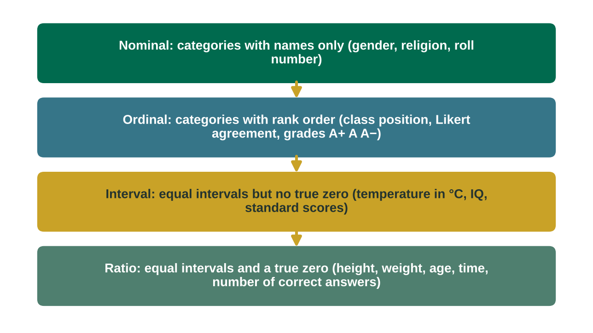
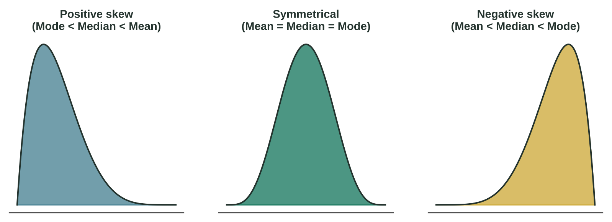
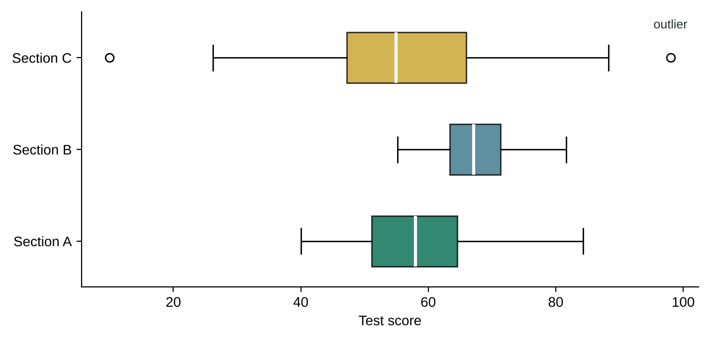
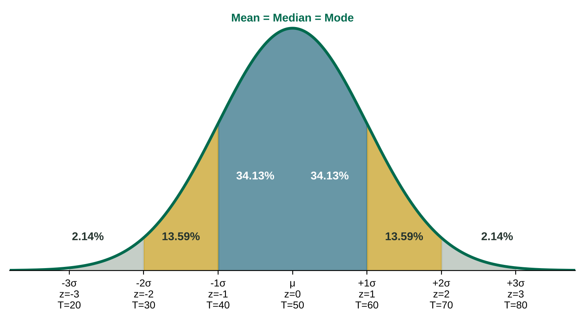
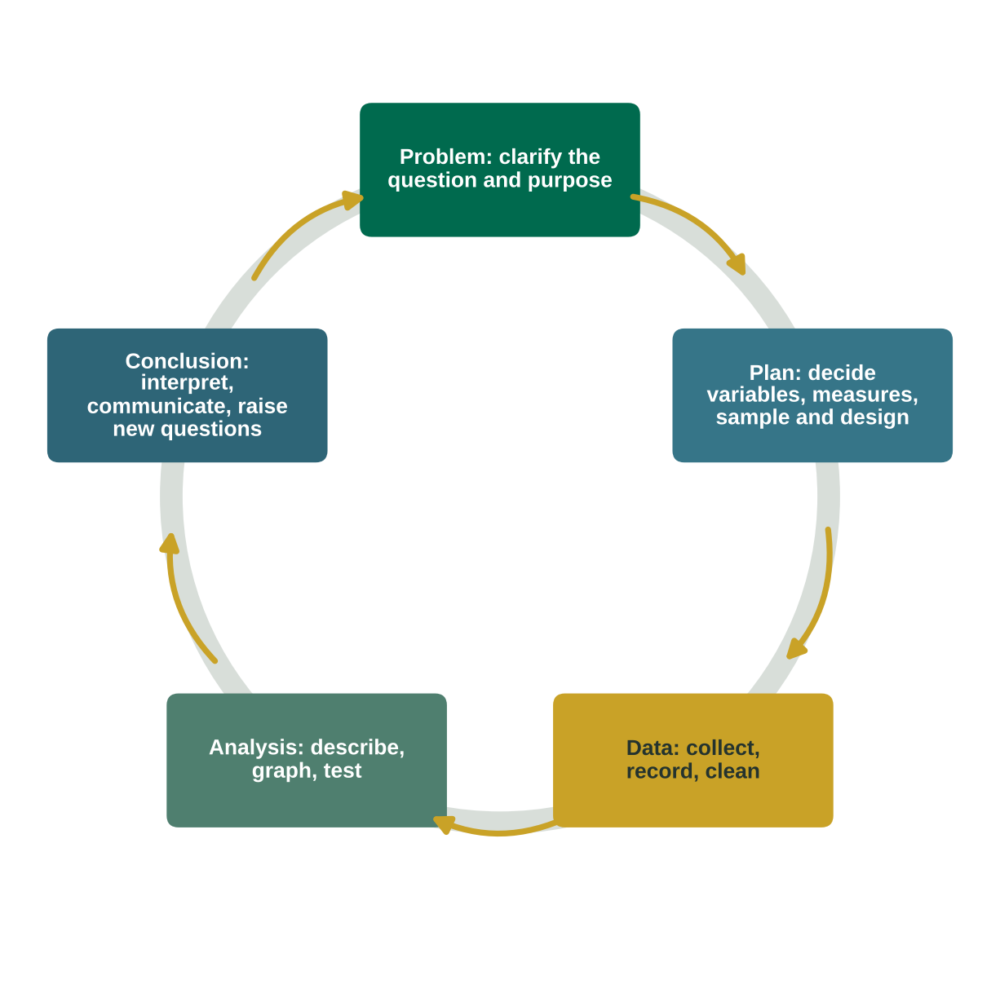
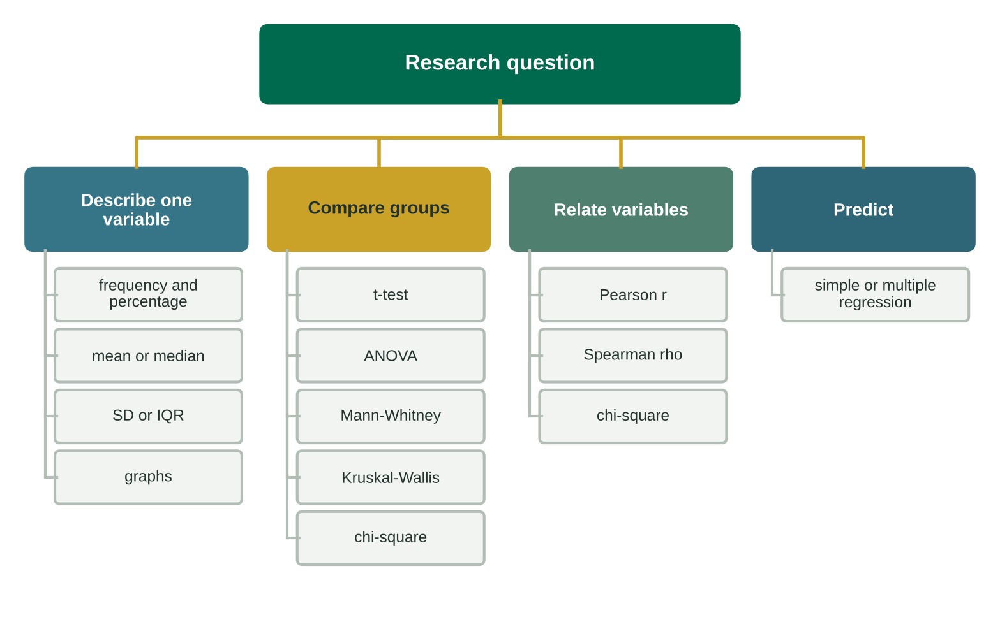

PC 126 শিক্ষায় পরিসংখ্যান
শিক্ষকদের জন্য পরিসংখ্যান সাক্ষরতা: Excel ও SPSS দিয়ে শিক্ষাগত উপাত্ত বর্ণনা, উপস্থাপন, সম্পর্ক নির্ণয় ও অনুমান
এটি ইংরেজি পাঠ নোটের বাংলা সংস্করণ। পাঠতালিকা ও তথ্যসূত্রের বইয়ের নাম মূল ভাষায় রাখা হয়েছে, যাতে লাইব্রেরিতে সহজে খুঁজে পান।
সূচিপত্র
এই কোর্স সম্পর্কে
পরিসংখ্যান (statistics) হলো সংখ্যাগত উপাত্ত সংগ্রহ, সংগঠন, সংক্ষিপ্তকরণ, বিশ্লেষণ ও ব্যাখ্যার বিজ্ঞান। শিক্ষক, গবেষক ও শিক্ষা পরিকল্পনাবিদদের কাছে এটি সেই ভাষা, যার মাধ্যমে অভীক্ষার ফলাফল, ভর্তির প্রবণতা, কার্যক্রমের প্রভাব এবং গবেষণার ফলাফল প্রকাশ করা হয়। এই কোর্সটি পরিসংখ্যানিক সাক্ষরতা এবং পরিমাণগত পদ্ধতি ব্যবহারের দক্ষতা গড়ে তোলে: চলক, উপাত্ত ও পরিমাপের স্কেলের মৌলিক ধারণা; সারণি ও লেখচিত্রে উপাত্ত সংগঠন ও উপস্থাপন; কেন্দ্রীয় প্রবণতা ও বিচ্যুতির পরিমাপ; সহসম্বন্ধ ও নির্ভরণ; সম্ভাবনা, পরিমিত বিন্যাস ও পরিসংখ্যানিক অনুমান; এবং Microsoft Excel ও IBM SPSS ব্যবহার করে শিক্ষাবিষয়ক উপাত্ত সংগ্রহ, বিশ্লেষণ ও ব্যাখ্যার ব্যবহারিক চক্র। সমাধানকৃত উদাহরণগুলো ধাপে ধাপে দেওয়া হয়েছে, যাতে এই নোট সরাসরি পাঠদানে ব্যবহার করা যায়।
কোর্সের উদ্দেশ্য
পরিসংখ্যানের অর্থ, ভূমিকা ও শাখা এবং পরিমাপের স্কেল ব্যাখ্যা করতে পারবেন।
উপাত্তকে গণসংখ্যা নিবেশন, সারণি ও লেখচিত্রে (বক্সপ্লটসহ) সংগঠিত করতে পারবেন।
কেন্দ্রীয় প্রবণতা ও বিচ্যুতির পরিমাপ নির্ণয় ও ব্যাখ্যা করতে পারবেন।
পিয়ারসন ও স্পিয়ারম্যান সহসম্বন্ধ এবং সরল রৈখিক নির্ভরণ নির্ণয় ও ব্যাখ্যা করতে পারবেন।
সম্ভাবনা, পরিমিত বিন্যাস, প্রাক্কলন ও অনুকল্প যাচাই ব্যাখ্যা করতে পারবেন।
Excel ও SPSS-এ মৌলিক বিশ্লেষণ সম্পাদন ও ব্যাখ্যা করতে পারবেন।
প্রতিটি ইউনিট অফিশিয়াল পাঠ্যসূচির ক্রম অনুসরণ করে। প্রথমে মূল আলোচনা পড়ুন, তারপর মূল কথা বক্সগুলো, এরপর পরীক্ষার প্রস্তুতি প্রশ্ন দিয়ে নিজেকে যাচাই করুন।
সোনালি বক্স = অবশ্যই মনে রাখার বিষয়। সবুজাভ নীল বক্স = সংজ্ঞা ও পড়ার কৌশল। সবুজ বক্স = বাংলাদেশ প্রেক্ষাপট।
শেষ অধ্যায়টি বিশ্ববিদ্যালয় পরীক্ষার ধরনে একটি প্রশ্নব্যাংক (উত্তরসহ MCQ, সংক্ষিপ্ত ও রচনামূলক প্রশ্ন), এরপর APA 7th রীতিতে পূর্ণ তথ্যসূত্র।
ভর্তি, বাজেট ও নীতি সংক্রান্ত পরিসংখ্যান প্রতি বছর বদলায়। পরীক্ষার আগে BANBEIS, DPE, UGC ও UNESCO-এর সর্বশেষ তথ্য দেখে নিন।
ইউনিট ১: পরিসংখ্যানের ভূমিকা
অধ্যায়ের সারসংক্ষেপ
পরিসংখ্যান (statistics) শব্দটি লাতিন status এবং ইতালীয় statista (যিনি রাষ্ট্রের বিষয়াদি দেখাশোনা করেন) শব্দ থেকে উদ্ভূত। মূলত এর অর্থ ছিল জনসংখ্যা ও সম্পদ সম্পর্কে সরকার কর্তৃক সংগৃহীত উপাত্ত।
এই অধ্যায়ে যা আছে: পরিসংখ্যানের অর্থ; শিক্ষায় পরিসংখ্যানের ভূমিকা; চলক, বৈশিষ্ট্য ও প্রত্যয়; উপাত্ত ও উপাত্ত কাঠামো; পরিমাপের স্কেল (Stevens, 1946); সমগ্রক ও নমুনা; পরামিতি ও নমুনামান; বর্ণনামূলক ও অনুমানমূলক পরিসংখ্যান; পরিসংখ্যানিক প্রতীক ও মৌলিক গণিত।
মূল পরিভাষা:
- পরিসংখ্যান (Croxton & Cowden) : "পরিসংখ্যানকে সংখ্যাগত উপাত্তের সংগ্রহ, উপস্থাপন, বিশ্লেষণ ও ব্যাখ্যা হিসেবে সংজ্ঞায়িত করা যায়।"
- পরিসংখ্যান (Gravetter & Wallnau, 2017) : "পরিসংখ্যান বলতে তথ্য সংগঠন, সংক্ষিপ্তকরণ ও ব্যাখ্যার জন্য ব্যবহৃত একগুচ্ছ গাণিতিক প্রক্রিয়াকে বোঝায়।"
মনে রাখার মূল বিষয়:
- P arameter (পরামিতি) যায় P opulation (সমগ্রক)-এর সঙ্গে; S tatistic (নমুনামান) যায় S ample (নমুনা)-এর সঙ্গে।
শিক্ষাক্রমে যা বলা হয়েছেইউনিট ১: পরিসংখ্যানের ভূমিকা · ৩ সংযোগ ঘণ্টা
এই ইউনিট শেষে শিক্ষার্থীরা যা পারবে
- পরিসংখ্যানের মৌলিক ধারণাগুলো (যেমন, সমগ্রক, নমুনা, পরামিতি, নমুনামান ইত্যাদি) বর্ণনা করা
- চলক ও উপাত্তের ধারণা এবং এদের শ্রেণিবিভাগ ব্যাখ্যা করা
- পরিসংখ্যানিক বিশ্লেষণের গুরুত্ব প্রতিষ্ঠা করা
- শিক্ষায় পরিসংখ্যানের অর্থ ও ভূমিকা
- চলক, বৈশিষ্ট্য/প্রত্যয়, চলকের প্রকারভেদ; একক চলক এবং
- উপাত্ত: সংজ্ঞা, শ্রেণিবিভাগ, উপাত্ত কাঠামো
- পরিমাপের স্কেল: নামসূচক, ক্রমসূচক, ব্যবধান ও অনুপাত স্কেল
- সমগ্রক ও নমুনা; পরামিতি ও নমুনামান
- পরিসংখ্যানের প্রধান শ্রেণিবিভাগ: বর্ণনামূলক ও অনুমানমূলক পরিসংখ্যান
- পরিসংখ্যানে ব্যবহৃত প্রতীক ও মৌলিক গণিত
১.১ পরিসংখ্যানের অর্থ
পরিসংখ্যান (statistics) শব্দটি লাতিন status এবং ইতালীয় statista (যিনি রাষ্ট্রের বিষয়াদি দেখাশোনা করেন) শব্দ থেকে উদ্ভূত। মূলত এর অর্থ ছিল জনসংখ্যা ও সম্পদ সম্পর্কে সরকার কর্তৃক সংগৃহীত উপাত্ত। বর্তমানে এর দুটি অর্থ রয়েছে: (১) বহুবচনে, সংখ্যাগত তথ্য (যেমন, BANBEIS-এর ভর্তি পরিসংখ্যান); এবং (২) একবচনে, উপাত্ত সংগ্রহ, সংগঠন, বিশ্লেষণ ও ব্যাখ্যার বিজ্ঞান।
পরিসংখ্যান (Croxton & Cowden): "পরিসংখ্যানকে সংখ্যাগত উপাত্তের সংগ্রহ, উপস্থাপন, বিশ্লেষণ ও ব্যাখ্যা হিসেবে সংজ্ঞায়িত করা যায়।"
পরিসংখ্যান (Gravetter & Wallnau, 2017): "পরিসংখ্যান বলতে তথ্য সংগঠন, সংক্ষিপ্তকরণ ও ব্যাখ্যার জন্য ব্যবহৃত একগুচ্ছ গাণিতিক প্রক্রিয়াকে বোঝায়।"
১.২ শিক্ষায় পরিসংখ্যানের ভূমিকা

চিত্র ১. শিক্ষায় পরিসংখ্যানের ব্যবহার
শিক্ষকগণ শ্রেণির কৃতিত্ব ব্যাখ্যা করতে, নম্বরকে গ্রেডে রূপান্তর করতে এবং সহায়তা প্রয়োজন এমন শিক্ষার্থী শনাক্ত করতে গড় (mean), আদর্শ বিচ্যুতি (standard deviation) ও শতাংশিক অবস্থান (percentile rank) ব্যবহার করেন।
অভীক্ষা প্রণেতাগণ প্রশ্ন বিশ্লেষণ (item analysis), নির্ভরযোগ্যতা সহগ ও নর্ম (norms) ব্যবহার করেন (দেখুন PC 117)।
গবেষকগণ অনুকল্প যাচাই এবং নমুনা থেকে সমগ্রকে সাধারণীকরণের জন্য অনুমানমূলক পরিসংখ্যান ব্যবহার করেন।
পরিকল্পনাবিদগণ ভর্তি, জেন্ডার সমতা সূচক, ঝরে পড়া ও টিকে থাকার হার ব্যবহার করেন (যেমন, BANBEIS-এর Annual Primary School Census এবং Bangladesh Education Statistics)।
সীমাবদ্ধতা: পরিসংখ্যান সমষ্টি নিয়ে কাজ করে, ব্যক্তি নিয়ে নয়; এর ফলাফল কেবল গড়ে সত্য; এর অপব্যবহার বা ভুল ব্যাখ্যা হতে পারে ("মিথ্যা, ডাহা মিথ্যা এবং পরিসংখ্যান"); এটি গুণগত বিষয় সরাসরি অধ্যয়ন করতে পারে না; এর সূত্রগুলো সম্ভাবনাভিত্তিক, সুনির্দিষ্ট নয়।
১.৩ চলক, বৈশিষ্ট্য ও প্রত্যয়
চলক (variable) হলো এমন একটি বৈশিষ্ট্য, যা ভিন্ন ভিন্ন ব্যক্তির ক্ষেত্রে ভিন্ন ভিন্ন মান গ্রহণ করতে পারে (যেমন, বয়স, অভীক্ষার নম্বর, জেন্ডার)। ধ্রুবক (constant) গবেষণায় অংশগ্রহণকারী সবার ক্ষেত্রে একই মান ধারণ করে। প্রত্যয় (construct) হলো একটি অনুমিত, বিমূর্ত বৈশিষ্ট্য (বুদ্ধি, প্রেষণা, উদ্বেগ), যার কার্যকরী সংজ্ঞা (operational definition) দিতে হয় এবং পরোক্ষভাবে পরিমাপ করতে হয়।
| শ্রেণিবিভাগ | প্রকারভেদ | উদাহরণসমূহ |
|---|---|---|
| প্রকৃতি অনুযায়ী | গুণগত (শ্রেণিবাচক) বনাম পরিমাণগত (সংখ্যাবাচক) | জেন্ডার, ধর্ম বনাম নম্বর, বয়স |
| মান অনুযায়ী | বিচ্ছিন্ন (গণনাযোগ্য, পূর্ণসংখ্যা) বনাম অবিচ্ছিন্ন (একটি পরিসরের যেকোনো মান) | ভাইবোনের সংখ্যা বনাম উচ্চতা, সময় |
| ভূমিকা অনুযায়ী | স্বাধীন বনাম নির্ভরশীল (এছাড়া নিয়ামক, মধ্যস্থতাকারী ও নিয়ন্ত্রণ চলক) | শিক্ষাদান পদ্ধতি বনাম কৃতিত্ব |
| অধ্যয়নকৃত চলকের সংখ্যা অনুযায়ী | একচলক (একটি), দ্বিচলক (দুটি), বহুচলক (আরও বেশি) |
একক চলক অধ্যয়ন করলে "বিন্যাসটি কেমন?" প্রশ্নের উত্তর মেলে (যেমন, গড় কৃতিত্ব)। চলকসমূহের মধ্যকার সম্পর্ক অধ্যয়ন করলে "এরা কি একসঙ্গে পরিবর্তিত হয়?" (সহসম্বন্ধ) অথবা "দলগুলোর মধ্যে কি পার্থক্য আছে?" (তুলনা) প্রশ্নের উত্তর মেলে।
১.৪ উপাত্ত ও উপাত্ত কাঠামো
উপাত্ত (data; একবচনে datum) হলো বিশ্লেষণের জন্য লিপিবদ্ধ পরিমাপ বা পর্যবেক্ষণ। উপাত্তগুচ্ছ (data set) হলো উপাত্তের একটি সংগ্রহ; স্কোর বা কাঁচা স্কোর (raw score) হলো একটি একক পরিমাপ।
প্রাথমিক উপাত্ত: গবেষক নিজে প্রত্যক্ষভাবে সংগ্রহ করেন (প্রশ্নমালা, অভীক্ষা)।
মাধ্যমিক উপাত্ত: অন্যরা সংগ্রহ করেছেন (BANBEIS, আদমশুমারি, PISA উপাত্ত)।
প্রস্থচ্ছেদ (cross-sectional) বনাম কালীন সারি (time-series) উপাত্ত।
উপাত্ত কাঠামো: একটি উপাত্ত ম্যাট্রিক্সে (Excel, SPSS) প্রতিটি সারি একটি কেস (শিক্ষার্থী) এবং প্রতিটি কলাম একটি চলক।
| ID | জেন্ডার (1 = পুরুষ, 2 = নারী) | বিদ্যালয়ের ধরন (1 = সরকারি, 2 = বেসরকারি) | গণিতের নম্বর | অধ্যয়ন ঘণ্টা |
|---|---|---|---|---|
| 1 | 2 | 1 | 72 | 3 |
| 2 | 1 | 2 | 58 | 1 |
| 3 | 2 | 2 | 81 | 4 |
১.৫ পরিমাপের স্কেল (Stevens, 1946)
এস. এস. স্টিভেনস (S. S. Stevens) পরিমাপকে চারটি স্তরে শ্রেণিবদ্ধ করেন। প্রতিটি উচ্চতর স্তরে নিম্নতর স্তরগুলোর সব বৈশিষ্ট্য থাকে এবং সেই সঙ্গে আরও একটি বৈশিষ্ট্য যুক্ত হয়।

চিত্র ২. পরিমাপের চারটি স্কেল, নিম্নতম থেকে উচ্চতম (Stevens, 1946)
| স্কেল | বৈশিষ্ট্য | প্রযোজ্য পরিসংখ্যান | উদাহরণ |
|---|---|---|---|
| নামসূচক | অভিন্নতা (শ্রেণিকরণ) | গণসংখ্যা, শতকরা হার, প্রচুরক, কাই-বর্গ | জেন্ডার, বিভাগ, বিদ্যালয়ের ধরন |
| ক্রমসূচক | অভিন্নতা + ক্রম | মধ্যমা, শতাংশিক, স্পিয়ারম্যানের rho, Mann–Whitney | মেধাক্রম, লিকার্ট প্রশ্ন |
| ব্যবধান | অভিন্নতা + ক্রম + সমান ব্যবধান | গড়, SD, পিয়ারসনের r, t-test, ANOVA | সেলসিয়াস তাপমাত্রা, IQ |
| অনুপাত | উপরের সবগুলো + পরম (প্রকৃত) শূন্য | অনুপাত ও বিচ্যুতি সহগসহ সব পরিসংখ্যান | উচ্চতা, ওজন, প্রতিক্রিয়া সময় |
মনে রাখার কৌশল: NOIR (Nominal, Ordinal, Interval, Ratio)। কৃতি অভীক্ষায় ০ নম্বর পাওয়ার অর্থ শূন্য জ্ঞান নয়; তাই অধিকাংশ অভীক্ষার নম্বরকে অনুপাত নয়, ব্যবধান স্কেলের ধরা হয়।
১.৬ সমগ্রক ও নমুনা; পরামিতি ও নমুনামান
| পরিভাষা | অর্থ | প্রতীক |
|---|---|---|
| সমগ্রক | আগ্রহের সম্পূর্ণ দল | আকার N |
| নমুনা | সমগ্রকের যে উপসেট প্রকৃতপক্ষে অধ্যয়ন করা হয় | আকার n |
| পরামিতি | একটি সমগ্রকের সংখ্যাগত বৈশিষ্ট্য | গ্রিক অক্ষর: μ (গড়), σ (SD), ρ (সহসম্বন্ধ) |
| নমুনামান | একটি নমুনার সংখ্যাগত বৈশিষ্ট্য | রোমান অক্ষর: x̄ বা M (গড়), s (SD), r (সহসম্বন্ধ) |
Parameter (পরামিতি) যায় Population (সমগ্রক)-এর সঙ্গে; Statistic (নমুনামান) যায় Sample (নমুনা)-এর সঙ্গে। অনুমানমূলক পরিসংখ্যান নমুনামান ব্যবহার করে সমগ্রকের পরামিতি প্রাক্কলন করে।
১.৭ বর্ণনামূলক ও অনুমানমূলক পরিসংখ্যান

চিত্র ৩. পরিসংখ্যানের দুটি প্রধান শাখা
১.৮ পরিসংখ্যানিক প্রতীক ও মৌলিক গণিত
| প্রতীক | অর্থ |
|---|---|
| X, Y | X ও Y চলকের কাঁচা স্কোর |
| N, n | সমগ্রক ও নমুনায় স্কোরের সংখ্যা |
| Σ (সিগমা) | "সমষ্টি"; ΣX = X₁ + X₂ + … + Xₙ |
| ΣX² | স্কোরের বর্গের সমষ্টি (প্রথমে বর্গ, তারপর যোগ) |
| (ΣX)² | সমষ্টির বর্গ (প্রথমে যোগ, তারপর বর্গ) |
| f | গণসংখ্যা |
| x̄, μ | নমুনা গড়, সমগ্রক গড় |
| s, σ | নমুনার SD, সমগ্রকের SD |
| s², σ² | ভেদাঙ্ক |
| r, ρ | সহসম্বন্ধ সহগ |
| z | আদর্শ স্কোর |
| H₀, H₁ | শূন্য ও বিকল্প অনুকল্প |
| α | তাৎপর্যের স্তর |
গাণিতিক ক্রিয়ার ক্রম: বন্ধনী → বর্গ ও বর্গমূল → গুণ ও ভাগ → সমষ্টিকরণ → যোগ ও বিয়োগ। আসন্নীকরণ: চূড়ান্ত উত্তরে যত দশমিক স্থান প্রয়োজন, গণনার সময় তার চেয়ে অন্তত দুই ঘর বেশি রাখুন।
সম্ভাব্য প্রশ্ন: "পরিসংখ্যানের সংজ্ঞা দিন এবং শিক্ষায় এর গুরুত্ব ব্যাখ্যা করুন।" "উদাহরণসহ পরিমাপের স্কেলগুলো ব্যাখ্যা করুন।" "পরামিতি ও নমুনামান এবং বর্ণনামূলক ও অনুমানমূলক পরিসংখ্যানের মধ্যে পার্থক্য করুন।"
ইউনিট ২: উপাত্ত সংগঠন ও উপস্থাপন
অধ্যায়ের সারসংক্ষেপ
কাঁচা (অশ্রেণিকৃত) উপাত্ত হলো মূলত যেভাবে সংগৃহীত হয়েছে সেভাবেই কোনো নির্দিষ্ট ক্রম ছাড়া থাকা স্কোর। এগুলো ব্যাখ্যা করা কঠিন।
এই অধ্যায়ে যা আছে: কাঁচা উপাত্ত ও সংগঠিত উপাত্ত; শ্রেণিবাচক চলকের কোডিং; সারণিবদ্ধকরণ; গণসংখ্যা নিবেশন; একচলক, দ্বিচলক ও বহুচলক বিন্যাস; লেখচিত্রের মাধ্যমে বিন্যাস উপস্থাপন; পাঁচ-সংখ্যার সারাংশ ও বক্সপ্লট; ল্যাব অনুশীলনী: Excel ও SPSS।
শিক্ষাক্রমে যা বলা হয়েছেইউনিট ২: উপাত্ত সংগঠন ও উপস্থাপন · ৭ সংযোগ ঘণ্টা
এই ইউনিট শেষে শিক্ষার্থীরা যা পারবে
- উপাত্ত সংগঠনের গুরুত্ব ও উপায় বর্ণনা করা
- গণসংখ্যা নিবেশনের সংজ্ঞা দেওয়া ও তা প্রস্তুত করা
- সারণি ও লেখচিত্রের মাধ্যমে ফলাফল উপস্থাপন করা
- সারণি ও লেখচিত্রের মাধ্যমে উপস্থাপিত উপাত্ত ব্যাখ্যা করা
- কাঁচা উপাত্ত ও সংগঠিত উপাত্ত
- শ্রেণিবাচক চলক থেকে উপাত্তের কোডিং
- উপাত্তের সারণিবদ্ধকরণ, সারণির অপরিহার্য উপাদান, সারণি প্রস্তুতকরণ
- সরল গণসংখ্যা নিবেশন: গণসংখ্যা নিবেশনের উদ্দেশ্য, প্রকারভেদ ও বৈশিষ্ট্য;
- উপাত্তের বিন্যাস: একচলক, দ্বিচলক ও বহুচলক
- লেখচিত্রের মাধ্যমে বিন্যাস উপস্থাপন: গুরুত্ব, লেখচিত্রের বৈশিষ্ট্য
- সরল গণসংখ্যা নিবেশনের লেখচিত্র: লেখচিত্র অঙ্কন, শ্রেণিবিভাগ ও আকৃতি
- পাঁচ-সংখ্যার সারাংশ বা বক্সপ্লট ল্যাব অনুশীলনী ১: পরিসংখ্যানিক বিশ্লেষণে Microsoft Excel ব্যবহারের পরিচিতি ল্যাব অনুশীলনী ২: পরিসংখ্যানিক বিশ্লেষণে SPSS ব্যবহারের পরিচিতি ল্যাব অনুশীলনী ৩: Excel ও SPSS-এ উপাত্ত সন্নিবেশ ল্যাব অনুশীলনী ৪: Excel ও SPSS ব্যবহার করে গণসংখ্যা নিবেশন, সারণি ও লেখচিত্রের মাধ্যমে উপস্থাপন
২.১ কাঁচা উপাত্ত ও সংগঠিত উপাত্ত
কাঁচা (অশ্রেণিকৃত) উপাত্ত (raw data) হলো মূলত যেভাবে সংগৃহীত হয়েছে সেভাবেই কোনো নির্দিষ্ট ক্রম ছাড়া থাকা স্কোর। এগুলো ব্যাখ্যা করা কঠিন। সংগঠিত উপাত্ত (organised data) একটি বিন্যস্ত সারি (ঊর্ধ্বক্রম বা অধঃক্রম), গণসংখ্যা নিবেশন, সারণি বা লেখচিত্রে সাজানো থাকে।
২.২ শ্রেণিবাচক চলকের কোডিং
বিশ্লেষণের জন্য শ্রেণিবাচক উত্তরগুলোকে সংখ্যায় রূপান্তর করা হয়: জেন্ডার (1 = পুরুষ, 2 = নারী); অবস্থান (1 = শহর, 2 = গ্রাম); লিকার্ট (5 = সম্পূর্ণ একমত … 1 = সম্পূর্ণ দ্বিমত)। একটি কোডবুক (codebook) প্রতিটি চলকের নাম, লেবেল, কোড মান এবং অনুপস্থিত মানের কোড (যেমন, 99 = উত্তর নেই) লিপিবদ্ধ করে। নামসূচক চলকের সংখ্যাগুলো কেবল লেবেল: জেন্ডার কোডের গড় অর্থহীন।
২.৩ সারণিবদ্ধকরণ
সারণিবদ্ধকরণ (tabulation) হলো সারি ও কলামে উপাত্তের নিয়মতান্ত্রিক বিন্যাস।
সারণির অপরিহার্য উপাদান: (১) সারণি নম্বর; (২) শিরোনাম (কী, কোথায়, কখন); (৩) ক্যাপশন বা কলাম শিরোনাম; (৪) স্টাব বা সারি শিরোনাম; (৫) মূল অংশ; (৬) শীর্ষ টীকা (একক); (৭) পাদটীকা ও উৎস নির্দেশ।
| প্রকার | বিবরণ |
|---|---|
| সরল (একমুখী) সারণি | একটি বৈশিষ্ট্যের ভিত্তিতে শ্রেণিকৃত উপাত্ত (যেমন, শ্রেণি অনুযায়ী শিক্ষার্থী) |
| দ্বিমুখী (আড়াআড়ি) সারণি | দুটি বৈশিষ্ট্য (যেমন, জেন্ডার × ফলাফল) |
| জটিল (বহুমুখী) সারণি | তিন বা ততোধিক বৈশিষ্ট্য |
দ্বিমুখী সারণির উদাহরণ: জেন্ডার অনুযায়ী অষ্টম শ্রেণির শিক্ষার্থীদের ফলাফল (কাল্পনিক)
| জেন্ডার | উত্তীর্ণ | অনুত্তীর্ণ | মোট |
|---|---|---|---|
| ছেলে | 42 | 8 | 50 |
| মেয়ে | 45 | 5 | 50 |
| মোট | 87 | 13 | 100 |
২.৪ গণসংখ্যা নিবেশন
গণসংখ্যা নিবেশন (frequency distribution) হলো এমন একটি সারণি, যা দেখায় প্রতিটি স্কোর বা স্কোরের দল কতবার ঘটেছে।
সরল (অশ্রেণিকৃত) গণসংখ্যা নিবেশন: প্রতিটি স্কোর তার গণসংখ্যাসহ তালিকাভুক্ত করে; পরিসর ছোট হলে ব্যবহৃত হয়।
শ্রেণিকৃত গণসংখ্যা নিবেশন: স্কোরগুলোকে শ্রেণিব্যবধানে (class interval) দলবদ্ধ করা হয়; পরিসর বড় হলে ব্যবহৃত হয়।
আপেক্ষিক গণসংখ্যা (অনুপাত = f/N), শতকরা গণসংখ্যা, ক্রমযোজিত গণসংখ্যা (cf) এবং ক্রমযোজিত শতকরা হার।
শ্রেণিকৃত গণসংখ্যা নিবেশন প্রস্তুতের ধাপসমূহ (Garrett, 1973)
পরিসর (range) নির্ণয় করুন = সর্বোচ্চ স্কোর − সর্বনিম্ন স্কোর।
শ্রেণিব্যবধানের সংখ্যা নির্ধারণ করুন (সাধারণত ৫–১৫টি; স্টার্জেসের নিয়ম k ≈ 1 + 3.322 log N)।
শ্রেণির দৈর্ঘ্য (i) নির্ধারণ করুন = পরিসর ÷ শ্রেণির সংখ্যা, যা একটি সুবিধাজনক সংখ্যায় (2, 3, 5, 10) আসন্নীকৃত করা হয়।
সর্বনিম্ন স্কোরের সমান বা তার নিচে i-এর একটি গুণিতক থেকে সর্বনিম্ন শ্রেণি শুরু করুন।
প্রতিটি স্কোরকে তার শ্রেণিতে ট্যালি করুন; গণসংখ্যা গণনা করুন; Σf = N কি না যাচাই করুন।
মূল পরিভাষা: উল্লিখিত (আপাত) সীমা, যেমন 60–69; প্রকৃত (যথার্থ) সীমা 59.5–69.5; মধ্যবিন্দু = (নিম্নসীমা + ঊর্ধ্বসীমা)/2 = 64.5।
সমাধানকৃত উদাহরণ: ৪০ জন শিক্ষার্থীর নম্বর
| শ্রেণিব্যবধান | প্রকৃত সীমা | মধ্যবিন্দু (x) | f | cf | % |
|---|---|---|---|---|---|
| 30–39 | 29.5–39.5 | 34.5 | 3 | 3 | 7.5 |
| 40–49 | 39.5–49.5 | 44.5 | 5 | 8 | 12.5 |
| 50–59 | 49.5–59.5 | 54.5 | 9 | 17 | 22.5 |
| 60–69 | 59.5–69.5 | 64.5 | 12 | 29 | 30.0 |
| 70–79 | 69.5–79.5 | 74.5 | 7 | 36 | 17.5 |
| 80–89 | 79.5–89.5 | 84.5 | 4 | 40 | 10.0 |
| মোট | N = 40 | 100 |
এই সারণিটি ইউনিট ৩-এ গড়, মধ্যমা, প্রচুরক ও আদর্শ বিচ্যুতি নির্ণয়ের জন্য আবার ব্যবহার করা হয়েছে।
২.৫ একচলক, দ্বিচলক ও বহুচলক বিন্যাস
একচলক: একটি মাত্র চলকের বিন্যাস (গণিতে প্রাপ্ত নম্বর)।
দ্বিচলক: দুটি চলকের যৌথ বিন্যাস (গণিত ও বিজ্ঞানে প্রাপ্ত নম্বর), যা আড়াআড়ি সারণি বা বিক্ষেপচিত্রে উপস্থাপন করা হয়।
বহুচলক: তিন বা ততোধিক চলক একসঙ্গে বিবেচনা করা (জেন্ডার, অবস্থান ও আর্থ-সামাজিক অবস্থা অনুযায়ী কৃতিত্ব)।
২.৬ লেখচিত্রের মাধ্যমে বিন্যাস উপস্থাপন
লেখচিত্র এক নজরে প্রবণতা দৃশ্যমান করে, তুলনায় সহায়তা করে এবং সহজে মনে থাকে। একটি ভালো লেখচিত্রে থাকে স্পষ্ট শিরোনাম, এককসহ চিহ্নিত অক্ষ, উপযুক্ত স্কেল (স্তম্ভলেখের ক্ষেত্রে Y-অক্ষ সাধারণত শূন্য থেকে শুরু হয়; উচ্চতা প্রস্থের প্রায় দুই-তৃতীয়াংশ থেকে তিন-চতুর্থাংশ), প্রয়োজনে নির্দেশিকা (legend), এবং কোনো অপ্রয়োজনীয় সাজসজ্জা থাকে না ("chartjunk", Tufte, 1983)।
| লেখচিত্র | উপাত্ত | বিবরণ |
|---|---|---|
| স্তম্ভলেখ (bar graph) | নামসূচক বা ক্রমসূচক | বিভিন্ন শ্রেণির জন্য পৃথক স্তম্ভ; স্তম্ভগুলোর মাঝে ফাঁক থাকে |
| পাই চিত্র (pie chart) | নামসূচক (সমগ্রের অংশ) | শতকরা হারের সমানুপাতিক বৃত্তকলা (কোণ = % × 3.6°) |
| আয়তলেখ (histogram) | ব্যবধান বা অনুপাত (শ্রেণিকৃত) | প্রকৃত সীমার ওপর সংলগ্ন স্তম্ভ; ক্ষেত্রফল গণসংখ্যা নির্দেশ করে |
| গণসংখ্যা বহুভুজ (frequency polygon) | ব্যবধান বা অনুপাত | শ্রেণি মধ্যবিন্দুর বিন্দুগুলো সরলরেখা দিয়ে যুক্ত, দুই প্রান্তে বন্ধ |
| অজিভ রেখা (ক্রমযোজিত গণসংখ্যা রেখা) | ব্যবধান বা অনুপাত | ঊর্ধ্ব প্রকৃত সীমায় ক্রমযোজিত গণসংখ্যা স্থাপন করা হয়; মধ্যমা ও শতাংশিক পাঠ করতে ব্যবহৃত হয় |
| কাণ্ড-পত্র প্রদর্শন (stem-and-leaf, Tukey) | ছোট উপাত্তগুচ্ছ | প্রকৃত মানগুলো অক্ষুণ্ণ রাখে |
| রেখাচিত্র (line graph) | কালীন সারি | সময়ের সঙ্গে প্রবণতা (যেমন, ২০১০–২০২৪ সালের ভর্তি) |
| বক্সপ্লট (boxplot) | ব্যবধান বা অনুপাত | পাঁচ-সংখ্যার সারাংশ; বহিঃস্থ মান দেখায় |
| বিক্ষেপচিত্র (scatterplot) | দুটি ব্যবধান চলক | সম্পর্ক (ইউনিট ৪) |
")
চিত্র ৪. গণসংখ্যা বহুভুজসহ একটি আয়তলেখ (দৃষ্টান্তমূলক অভীক্ষা স্কোর)
বিন্যাসের আকৃতি
প্রতিসম: দুই অর্ধাংশ পরস্পরের প্রতিবিম্ব (পরিমিত, ঘণ্টাকৃতি)।
ধনাত্মক বঙ্কিম: লেজ ডান দিকে; অধিকাংশ স্কোর নিম্ন (খুব কঠিন অভীক্ষা)।
ঋণাত্মক বঙ্কিম: লেজ বাঁ দিকে; অধিকাংশ স্কোর উচ্চ (খুব সহজ অভীক্ষা)।
সূচালতা (kurtosis): শীর্ষের তীক্ষ্ণতা: অতিসূচাল (leptokurtic; উঁচু, সরু), মধ্যসূচাল (mesokurtic; পরিমিত), চ্যাপ্টা (platykurtic; সমতল)।
শীর্ষসংখ্যা: একশীর্ষ, দ্বিশীর্ষ (দুটি চূড়া, সম্ভবত দুটি ভিন্ন দল), বহুশীর্ষ; আয়তাকার (সুষম)।

চিত্র ৫. প্রতিসম ও বঙ্কিম বিন্যাস এবং গড়, মধ্যমা ও প্রচুরকের অবস্থান

চিত্র ৬. সূচালতা: অতিসূচাল, মধ্যসূচাল ও চ্যাপ্টা বিন্যাস
২.৭ পাঁচ-সংখ্যার সারাংশ ও বক্সপ্লট
জন টুকি (John Tukey, 1977) পাঁচ-সংখ্যার সারাংশ (five-number summary) প্রস্তাব করেন: সর্বনিম্ন মান, প্রথম চতুর্থক (Q1), মধ্যমা (Q2), তৃতীয় চতুর্থক (Q3) এবং সর্বোচ্চ মান। বক্সপ্লট (box-and-whisker plot) এটি উপস্থাপন করে।
বাক্সটি Q1 থেকে Q3 পর্যন্ত বিস্তৃত এবং মাঝের ৫০% স্কোর ধারণ করে; এর দৈর্ঘ্যই আন্তঃচতুর্থক পরিসর (IQR = Q3 − Q1)।
বাক্সের ভেতরের রেখাটি মধ্যমা।
হুইস্কার (whiskers) বাক্স থেকে 1.5 × IQR-এর মধ্যে থাকা সবচেয়ে প্রান্তিক স্কোর পর্যন্ত প্রসারিত হয়।
1.5 × IQR-এর বাইরের বিন্দুগুলোকে বহিঃস্থ মান (outliers) হিসেবে চিহ্নিত করা হয়।
উদাহরণ: 11, 12, 13, 14, 15, 15, 16, 17, 18, 19 স্কোরগুলোর ক্ষেত্রে: সর্বনিম্ন = 11, Q1 = 13, মধ্যমা = 15, Q3 = 17, সর্বোচ্চ = 19; IQR = 4। (এখানে চতুর্থকগুলো নিম্ন ও ঊর্ধ্ব অর্ধাংশের মধ্যমা; সফটওয়্যার কিছুটা ভিন্ন অন্তর্বেশন নিয়ম ব্যবহার করতে পারে।)

চিত্র ৭. তিনটি দলের তুলনামূলক বক্সপ্লট: কেন্দ্র, বিস্তার, বঙ্কিমতা ও বহিঃস্থ মান
২.৮ ল্যাব অনুশীলনী: Excel ও SPSS
ল্যাব ১: পরিসংখ্যানের জন্য Microsoft Excel
ওয়ার্কবুক, ওয়ার্কশিট, সেল, সারি (কেস) ও কলাম (চলক)।
প্রয়োজনীয় ফাংশন: =SUM(), =AVERAGE(), =MEDIAN(), =MODE.SNGL(), =STDEV.S(), =STDEV.P(), =VAR.S(), =MIN(), =MAX(), =QUARTILE.INC(), =CORREL(), =COUNTIF(), =FREQUENCY(), =STANDARDIZE(), =NORM.S.DIST()।
Descriptive Statistics, Histogram, Correlation, Regression ও t-test-এর জন্য Data Analysis ToolPak চালু করুন (File → Options → Add-ins)।
স্তম্ভলেখ, পাই চিত্র, আয়তলেখ, রেখাচিত্র ও বিক্ষেপচিত্রের জন্য Insert → Charts ব্যবহার করুন।
ল্যাব ২: IBM SPSS Statistics-এর পরিচিতি
Data View (সারি = কেস, কলাম = চলক) এবং Variable View (Name, Type, Width, Decimals, Label, Values, Missing, Measure: Nominal, Ordinal বা Scale)।
Output Viewer সারণি ও লেখচিত্র দেখায়; Syntax Editor পুনরুৎপাদনযোগ্যতার জন্য কমান্ডগুলো লিপিবদ্ধ করে।
ল্যাব ৩: উপাত্ত সন্নিবেশ
একটি কোডবুক প্রস্তুত করুন।
Variable View-এ লেবেল ও মান-লেবেলসহ (1 = পুরুষ, 2 = নারী) চলকগুলো সংজ্ঞায়িত করুন।
Data View-এ একটি একটি করে কেসের উপাত্ত সন্নিবেশ করুন; .sav ফাইল হিসেবে সংরক্ষণ করুন।
ত্রুটি যাচাই করুন: Analyze → Descriptive Statistics → Frequencies (পরিসরের বাইরের মান খুঁজুন)।
ল্যাব ৪: গণসংখ্যা সারণি ও লেখচিত্র
SPSS: Analyze → Descriptive Statistics → Frequencies → চলক নির্বাচন → Charts (স্তম্ভলেখ, পাই চিত্র, পরিমিত রেখাসহ আয়তলেখ)। বক্সপ্লট ও বিক্ষেপচিত্রের জন্য Graphs → Chart Builder। শ্রেণিব্যবধান তৈরির জন্য Transform → Recode into Different Variables।
Excel: গণসংখ্যা গণনার জন্য PivotTable; =FREQUENCY(data, bins); Insert → Histogram।
সম্ভাব্য প্রশ্ন: "প্রদত্ত স্কোর থেকে একটি শ্রেণিকৃত গণসংখ্যা নিবেশন প্রস্তুত করুন এবং আয়তলেখ ও গণসংখ্যা বহুভুজ অঙ্কন করুন।" "একটি পরিসংখ্যানিক সারণির অপরিহার্য অংশগুলো কী কী?" "বক্সপ্লট কী? পাঁচ-সংখ্যার সারাংশ ব্যাখ্যা করুন।"
ইউনিট ৩: উপাত্তের সংক্ষিপ্তকরণ ও বর্ণনা
অধ্যায়ের সারসংক্ষেপ
কেন্দ্রীয় প্রবণতার পরিমাপ হলো একটি একক মান, যা একটি বিন্যাসের কেন্দ্র বা প্রতিনিধিত্বকারী মান নির্দেশ করে (Gravetter & Wallnau, 2017)। এর উদ্দেশ্য: সম্পূর্ণ স্কোরগুচ্ছের সংক্ষিপ্ত সারাংশ প্রদান, দলগুলোর তুলনা এবং পরবর্তী পরিসংখ্যানের ভিত্তি হিসেবে কাজ করা।
এই অধ্যায়ে যা আছে: কেন্দ্রীয় প্রবণতা: ধারণা ও উদ্দেশ্য; গড়; মধ্যমা; প্রচুরক; গড়, মধ্যমা ও প্রচুরকের তুলনা ও নির্বাচন; গড় থেকে বিচ্যুতি; বিচ্যুতি (বিস্তৃতি); ল্যাব ৫: Excel ও SPSS-এ কেন্দ্রীয় প্রবণতা ও বিস্তৃতি।
শিক্ষাক্রমে যা বলা হয়েছেইউনিট ৩: উপাত্তের সংক্ষিপ্তকরণ ও বর্ণনা · ৯ সংযোগ ঘণ্টা
এই ইউনিট শেষে শিক্ষার্থীরা যা পারবে
- উপাত্ত সংক্ষিপ্তকরণের উপায় বর্ণনা করা
- কেন্দ্রীয় প্রবণতার ধারণা ও পরিমাপ ব্যাখ্যা করা
- বিস্তৃতির অর্থ ব্যাখ্যা করা
- বিস্তৃতির বিভিন্ন পরিমাপ নির্ণয় করা
- বিন্যাসের কেন্দ্রীয় প্রবণতা/অবস্থান
- ধারণা, অর্থ ও উদ্দেশ্য
- কেন্দ্রীয় প্রবণতার পরিমাপ: গড়, মধ্যমা ও প্রচুরক
- কেন্দ্রীয় প্রবণতার উপযুক্ত পরিমাপ নির্বাচন
- গড়, মধ্যমা ও প্রচুরকের তুলনা
- গড় থেকে বিচ্যুতি
- বিন্যাসের বিচ্যুতি/বিস্তৃতি
- বিচ্যুতির পরিমাপ: পরিসর, গড় বিচ্যুতি, চতুর্থক বিচ্যুতি ও আন্তঃচতুর্থক পরিসর
- সমগ্রক ও নমুনার ভেদাঙ্ক ও আদর্শ বিচ্যুতি ল্যাব অনুশীলনী ৫: Excel ও SPSS ব্যবহার করে কেন্দ্রীয় প্রবণতা ও বিস্তৃতি নির্ণয়
৩.১ কেন্দ্রীয় প্রবণতা: ধারণা ও উদ্দেশ্য
কেন্দ্রীয় প্রবণতার পরিমাপ (measure of central tendency) হলো একটি একক মান, যা একটি বিন্যাসের কেন্দ্র বা প্রতিনিধিত্বকারী মান নির্দেশ করে (Gravetter & Wallnau, 2017)। এর উদ্দেশ্য: সম্পূর্ণ স্কোরগুচ্ছের সংক্ষিপ্ত সারাংশ প্রদান, দলগুলোর তুলনা এবং পরবর্তী পরিসংখ্যানের ভিত্তি হিসেবে কাজ করা।
একটি উত্তম গড়ের বৈশিষ্ট্য (ইউল, Yule): সুনির্দিষ্টভাবে সংজ্ঞায়িত; সব পর্যবেক্ষণের ওপর ভিত্তিশীল; বোঝা ও গণনা করা সহজ; পরবর্তী বীজগাণিতিক প্রয়োগের উপযোগী; নমুনায়নের ওঠানামায় সবচেয়ে কম প্রভাবিত; প্রান্তিক মান দ্বারা অযথা প্রভাবিত নয়।
৩.২ গড়
গাণিতিক গড় (arithmetic mean) হলো স্কোরগুলোর সমষ্টিকে স্কোরের সংখ্যা দিয়ে ভাগ করে প্রাপ্ত মান।
অশ্রেণিকৃত উপাত্ত: x̄ = ΣX / n (সমগ্রক μ = ΣX / N)
শ্রেণিকৃত উপাত্ত: x̄ = Σfx / N, যেখানে x হলো শ্রেণি মধ্যবিন্দু।
ভারযুক্ত গড়: x̄w = Σwx / Σw (যেমন, ভিন্ন ভিন্ন ক্রেডিটের কোর্সগুলোর GPA একত্র করা)।
সমাধানকৃত উদাহরণ (অশ্রেণিকৃত): স্কোর 12, 15, 11, 18, 14, 16, 13, 15, 17, 19। ΣX = 150, n = 10, সুতরাং x̄ = 15।
সমাধানকৃত উদাহরণ (শ্রেণিকৃত, ২.৪-এর সারণি): Σfx = (3 × 34.5) + (5 × 44.5) + (9 × 54.5) + (12 × 64.5) + (7 × 74.5) + (4 × 84.5) = 103.5 + 222.5 + 490.5 + 774 + 521.5 + 338 = 2450। x̄ = 2450 / 40 = 61.25।
বৈশিষ্ট্য: গড় থেকে বিচ্যুতিগুলোর সমষ্টি শূন্য, Σ(X − x̄) = 0; গড় থেকে বিচ্যুতির বর্গের সমষ্টি অন্য যেকোনো মান থেকে বিচ্যুতির বর্গের সমষ্টির চেয়ে ক্ষুদ্রতর (ন্যূনতম বর্গ); প্রতিটি স্কোরের সঙ্গে একটি ধ্রুবক যোগ করলে গড়ের সঙ্গেও সেই ধ্রুবক যুক্ত হয়; প্রতিটি স্কোরকে একটি ধ্রুবক দিয়ে গুণ করলে গড়ও সেই ধ্রুবক দিয়ে গুণিত হয়।
৩.৩ মধ্যমা
মধ্যমা (median) হলো স্কোরগুলোকে ক্রমানুসারে সাজালে মাঝের স্কোর: যে বিন্দু বিন্যাসকে দুটি সমান অর্ধাংশে ভাগ করে (৫০তম শতাংশিক)।
অশ্রেণিকৃত উপাত্ত: অবস্থান = (n + 1)/2। n বিজোড় হলে মাঝের স্কোর; n জোড় হলে মাঝের দুটি স্কোরের গড়। উদাহরণ: ক্রমানুসারে 11, 12, 13, 14, 15, 15, 16, 17, 18, 19 → মধ্যমা = (15 + 15)/2 = 15।
শ্রেণিকৃত উপাত্ত: Mdn = L + [(N/2 − cf) / fm] × i, যেখানে L = মধ্যমা শ্রেণির প্রকৃত নিম্নসীমা, cf = ওই শ্রেণির নিচের ক্রমযোজিত গণসংখ্যা, fm = মধ্যমা শ্রেণির গণসংখ্যা, i = শ্রেণির দৈর্ঘ্য।
সমাধানকৃত উদাহরণ (শ্রেণিকৃত): N/2 = 20; 60–69 শ্রেণিতে ক্রমযোজিত গণসংখ্যা প্রথম 20-এ পৌঁছায় (নিচের cf = 17)। L = 59.5, fm = 12, i = 10। Mdn = 59.5 + [(20 − 17)/12] × 10 = 59.5 + 2.5 = 62.0।
৩.৪ প্রচুরক
প্রচুরক (mode) হলো যে স্কোর বা শ্রেণি সবচেয়ে বেশিবার ঘটে।
অশ্রেণিকৃত: উদাহরণে 15 দুবার এসেছে, সুতরাং প্রচুরক = 15।
শ্রেণিকৃত (স্থূল প্রচুরক): প্রচুরক শ্রেণির মধ্যবিন্দু = 64.5।
শ্রেণিকৃত (সূত্র): Mo = L + [(f₁ − f₀) / (2f₁ − f₀ − f₂)] × i, যেখানে f₁ = প্রচুরক শ্রেণির গণসংখ্যা, f₀ = আগের শ্রেণির গণসংখ্যা, f₂ = পরের শ্রেণির গণসংখ্যা। উদাহরণ: Mo = 59.5 + [(12 − 9)/(24 − 9 − 7)] × 10 = 59.5 + 3.75 = 63.25।
মাঝারি বঙ্কিম বিন্যাসের জন্য অভিজ্ঞতাভিত্তিক সম্পর্ক (কার্ল পিয়ারসন, Karl Pearson): প্রচুরক ≈ 3 মধ্যমা − 2 গড় = 3(62) − 2(61.25) = 63.5।
৩.৫ গড়, মধ্যমা ও প্রচুরকের তুলনা ও নির্বাচন
| মানদণ্ড | গড় | মধ্যমা | মাধ্যম |
|---|---|---|---|
| প্রয়োজনীয় স্কেল | ব্যবধান বা অনুপাত | ক্রমসূচক বা উচ্চতর | যেকোনো (নামসূচকের জন্য একমাত্র) |
| সব স্কোর ব্যবহার করে | হ্যাঁ | না | না |
| প্রান্তিক স্কোর দ্বারা প্রভাবিত | প্রবলভাবে | সামান্য | না |
| উন্মুক্ত প্রান্তবিশিষ্ট শ্রেণি | নির্ণয় করা যায় না | নির্ণয় করা যায় | নির্ণয় করা যায় |
| পরবর্তী বীজগাণিতিক ব্যবহার | চমৎকার (SD, t-test) | সীমিত | অত্যন্ত সীমিত |
| নমুনায়ন স্থিতিশীলতা | সর্বাধিক স্থিতিশীল | কম | সবচেয়ে কম |
| যখন ব্যবহার করা সর্বোত্তম | বিন্যাস প্রতিসম; পরবর্তী বিশ্লেষণ প্রয়োজন | বিন্যাস বঙ্কিম (আয়, প্রতিক্রিয়া সময়) অথবা বহিঃস্থ মান রয়েছে | নামসূচক উপাত্ত; দ্রুততম প্রাক্কলন; সবচেয়ে প্রচলিত ক্ষেত্র |
বঙ্কিম বিন্যাসে অবস্থান: প্রতিসম বিন্যাসে গড় = মধ্যমা = প্রচুরক। ধনাত্মক বঙ্কিম বিন্যাসে প্রচুরক < মধ্যমা < গড় (গড় লেজের দিকে টেনে নেওয়া হয়)। ঋণাত্মক বঙ্কিম বিন্যাসে গড় < মধ্যমা < প্রচুরক।
৩.৬ গড় থেকে বিচ্যুতি
বিচ্যুতি স্কোর (deviation score) হলো x = X − x̄। বিচ্যুতিগুলো দেখায় প্রতিটি স্কোর গড় থেকে কত দূরে এবং কোন দিকে অবস্থিত। এদের সমষ্টি সর্বদা শূন্য; তাই বিস্তার পরিমাপের জন্য আমরা পরম বিচ্যুতি (গড় বিচ্যুতি) অথবা বিচ্যুতির বর্গ (ভেদাঙ্ক ও SD) ব্যবহার করি।
৩.৭ বিচ্যুতি (বিস্তৃতি)
বিচ্যুতি (variability) বর্ণনা করে স্কোরগুলো কতটা ছড়ানো বা কেন্দ্রীভূত। দুটি শ্রেণির গড় একই (৬০) হতে পারে, কিন্তু বিস্তার সম্পূর্ণ ভিন্ন: একটি সমজাতীয়, অন্যটি অসমজাতীয়। বিচ্যুতির পরিমাপ দেখায় গড় উপাত্তের কতটা ভালো প্রতিনিধিত্ব করে, এবং অনুমানের জন্য এগুলো অপরিহার্য।

চিত্র ৮. একই গড়, ভিন্ন বিস্তার: বিচ্যুতি কেন গুরুত্বপূর্ণ
| পরিমাপ | সূত্র | মন্তব্য |
|---|---|---|
| পরিসর | সর্বোচ্চ − সর্বনিম্ন (অথবা অন্তর্ভুক্তিমূলক পরিসরের জন্য: H − L + 1) | দ্রুত, তবে কেবল দুটি প্রান্তিক স্কোরের ওপর ভিত্তিশীল |
| চতুর্থক বিচ্যুতি (QD, অর্ধ-আন্তঃচতুর্থক পরিসর) | QD = (Q3 − Q1) / 2 | মধ্যমার সঙ্গে ব্যবহৃত হয়; প্রান্তিক মান দ্বারা প্রভাবিত হয় না |
| আন্তঃচতুর্থক পরিসর (IQR) | Q3 − Q1 | মাঝের ৫০%-এর পরিসর; বক্সপ্লটে ব্যবহৃত হয় |
| গড় বিচ্যুতি (MD) | MD = Σ|X − x̄| / n | সব স্কোর ব্যবহার করে, তবে চিহ্ন উপেক্ষা করে; অনুমানে কম ব্যবহৃত |
| ভেদাঙ্ক | σ² = Σ(X − μ)² / N; s² = Σ(X − x̄)² / (n − 1) | বিচ্যুতির বর্গের গড় |
| আদর্শ বিচ্যুতি (SD) | σ = √[Σ(X − μ)² / N]; s = √[Σ(X − x̄)² / (n − 1)] | সবচেয়ে গুরুত্বপূর্ণ ও স্থিতিশীল পরিমাপ; কার্ল পিয়ারসন (১৮৯৩) প্রবর্তন করেন |
| বিচ্যুতি সহগ (CV) | CV = (SD / x̄) × 100 | আপেক্ষিক বিচ্যুতি; ভিন্ন গড় বা এককবিশিষ্ট দলগুলোর তুলনা করে |
কেন n − 1? নমুনা সমগ্রকের বিচ্যুতিকে কম করে প্রাক্কলন করার প্রবণতা রাখে। n − 1 (স্বাতন্ত্র্য মাত্রা, degrees of freedom) দিয়ে ভাগ করলে সমগ্রক ভেদাঙ্কের একটি পক্ষপাতহীন প্রাক্কলন পাওয়া যায় (বেসেলের সংশোধন)।
সমাধানকৃত উদাহরণ (অশ্রেণিকৃত)
স্কোর: 11, 12, 13, 14, 15, 15, 16, 17, 18, 19; x̄ = 15।
| X | x = X − x̄ | |x| | x² |
|---|---|---|---|
| 11 | −4 | 4 | 16 |
| 12 | −3 | 3 | 9 |
| 13 | −2 | 2 | 4 |
| 14 | −1 | 1 | 1 |
| 15 | 0 | 0 | 0 |
| 15 | 0 | 0 | 0 |
| 16 | 1 | 1 | 1 |
| 17 | 2 | 2 | 4 |
| 18 | 3 | 3 | 9 |
| 19 | 4 | 4 | 16 |
| Σ | 0 | 20 | 60 |
পরিসর = 19 − 11 = 8
Q1 = 13, Q3 = 17; IQR = 4; QD = 2
MD = 20 / 10 = 2.0
সমগ্রক ভেদাঙ্ক σ² = 60 / 10 = 6.0; σ = √6 = 2.45
নমুনা ভেদাঙ্ক s² = 60 / 9 = 6.67; s = 2.58
CV = (2.45 / 15) × 100 = 16.3%
সমাধানকৃত উদাহরণ (শ্রেণিকৃত, ২.৪-এর সারণি)
মধ্যবিন্দু এবং x̄ = 61.25 ব্যবহার করে: Σf(x − x̄)² = 7477.5। σ² = 7477.5 / 40 = 186.94; σ = 13.67।
ব্যাখ্যা: গড় নম্বর প্রায় ৬১ এবং একজন সাধারণ শিক্ষার্থীর নম্বর এর থেকে প্রায় ১৪ নম্বর দূরে অবস্থিত। মোটামুটি পরিমিত বিন্যাসে প্রায় ৬৮% শিক্ষার্থী ৪৭.৬ থেকে ৭৪.৯-এর মধ্যে নম্বর পায়।
SD-এর বৈশিষ্ট্য
প্রতিটি স্কোরের সঙ্গে একটি ধ্রুবক যোগ করলে SD পরিবর্তিত হয় না; প্রতিটি স্কোরকে একটি ধ্রুবক দিয়ে গুণ করলে SD-ও সেই ধ্রুবক দিয়ে গুণিত হয়; SD সর্বদা ≥ 0; কেবল সব স্কোর সমান হলেই এটি শূন্য হয়।
৩.৮ ল্যাব ৫: Excel ও SPSS-এ কেন্দ্রীয় প্রবণতা ও বিস্তৃতি
Excel: =AVERAGE(A2:A41), =MEDIAN(), =MODE.SNGL(), =STDEV.S(), =VAR.S(), =QUARTILE.INC(range,1); অথবা Data → Data Analysis → Descriptive Statistics (Summary statistics-এ টিক দিন)।
SPSS: Analyze → Descriptive Statistics → Frequencies → Statistics (গড়, মধ্যমা, প্রচুরক, SD, ভেদাঙ্ক, পরিসর, চতুর্থক, বঙ্কিমতা, সূচালতা); অথবা Analyze → Descriptive Statistics → Descriptives; দলভিত্তিক বক্সপ্লট ও পরিসংখ্যানের জন্য Analyze → Descriptive Statistics → Explore।
সম্ভাব্য প্রশ্ন: "প্রদত্ত গণসংখ্যা নিবেশন থেকে গড়, মধ্যমা ও প্রচুরক নির্ণয় করুন।" "গড়, মধ্যমা ও প্রচুরকের তুলনা করুন। বঙ্কিম উপাত্তের জন্য আপনি কোনটি ব্যবহার করবেন এবং কেন?" "আদর্শ বিচ্যুতির সংজ্ঞা দিন এবং প্রদত্ত উপাত্ত থেকে তা নির্ণয় করুন।" "SD-কে কেন বিচ্যুতির সর্বোত্তম পরিমাপ বলা হয়?"
ইউনিট ৪: সম্পর্ক অধ্যয়ন
অধ্যায়ের সারসংক্ষেপ
শিক্ষাবিষয়ক অনেক প্রশ্নই চলকগুলো কীভাবে একসঙ্গে পরিবর্তিত হয় তা নিয়ে: যেসব শিক্ষার্থী বেশি সময় পড়াশোনা করে তারা কি বেশি সফল? উদ্বেগ কি অভীক্ষার কৃতিত্বের সঙ্গে সম্পর্কিত?
এই অধ্যায়ে যা আছে: সম্পর্ক অধ্যয়নের গুরুত্ব; সহসম্বন্ধ: অর্থ, ব্যবহার ও প্রকারভেদ; সহসম্বন্ধ সহগ; সহসম্বন্ধের লেখচিত্র: বিক্ষেপচিত্র; সহসম্বন্ধ নির্ণয়; সহসম্বন্ধের ব্যাখ্যা; সহসম্বন্ধ ও কার্যকারণ; নির্ভরণ: অর্থ ও ব্যবহার; ল্যাব ৬: SPSS-এ সহসম্বন্ধ ও নির্ভরণ।
শিক্ষাক্রমে যা বলা হয়েছেইউনিট ৪: সম্পর্ক অধ্যয়ন · ৫ সংযোগ ঘণ্টা
এই ইউনিট শেষে শিক্ষার্থীরা যা পারবে
- সম্পর্ক অধ্যয়নের গুরুত্ব বর্ণনা করা
- দুটি চলকের মধ্যকার সহসম্বন্ধের সংজ্ঞা দেওয়া
- সহসম্বন্ধের বিভিন্ন প্রকারভেদ ব্যাখ্যা করা
- সহসম্বন্ধ সহগ নির্ণয় করা
- দুটি চলকের মধ্যকার সম্পর্ক ব্যাখ্যা করা
- নির্ভরণের সংজ্ঞা ও নির্ভরণ বিশ্লেষণের ব্যবহার উল্লেখ করা
- নির্ভরণ মডেল ব্যাখ্যা করা
- সহসম্বন্ধ
- সহসম্বন্ধের অর্থ, ব্যবহার ও প্রকারভেদ (সরল ও বহুগুণ সহসম্বন্ধ; ধনাত্মক, ঋণাত্মক এবং
- নির্ভরণ
- নির্ভরণের অর্থ ও ব্যবহার ল্যাব অনুশীলনী ৬: SPSS ব্যবহার করে সম্পর্ক নির্ণয়
৪.১ সম্পর্ক অধ্যয়নের গুরুত্ব
শিক্ষাবিষয়ক অনেক প্রশ্নই চলকগুলো কীভাবে একসঙ্গে পরিবর্তিত হয় তা নিয়ে: যেসব শিক্ষার্থী বেশি সময় পড়াশোনা করে তারা কি বেশি সফল? উদ্বেগ কি অভীক্ষার কৃতিত্বের সঙ্গে সম্পর্কিত? SSC-র ফলাফল কি বিশ্ববিদ্যালয়ের GPA সম্পর্কে পূর্বাভাস দেয়? সম্পর্ক আমাদের বর্ণনা করতে, পূর্বাভাস দিতে এবং কারণ সম্পর্কে অনুকল্প গঠন করতে সহায়তা করে (যা পরে পরীক্ষণের মাধ্যমে যাচাই করা হয়)।
৪.২ সহসম্বন্ধ: অর্থ, ব্যবহার ও প্রকারভেদ
সহসম্বন্ধ (correlation) হলো একটি পরিসংখ্যানিক কৌশল, যা দুটি চলকের মধ্যকার সম্পর্ক পরিমাপ ও বর্ণনা করে (Gravetter & Wallnau, 2017)। সহসম্বন্ধ সহগ (r) হলো একটি একক সংখ্যা, যা রৈখিক সম্পর্কের দিক ও মাত্রা (শক্তি) বর্ণনা করে।
ব্যবহার: পূর্বাভাস (নির্বাচন ও ভর্তি); অভীক্ষার নির্ভরযোগ্যতা (পুনঃঅভীক্ষা, অর্ধ-বিভাজন) ও যথার্থতা (মানদণ্ড যথার্থতা) নির্ধারণ; তত্ত্ব যাচাই; পরবর্তী অধ্যয়নের জন্য চলক শনাক্তকরণ।
| ভিত্তি | প্রকারভেদ |
|---|---|
| দিক | ধনাত্মক (দুটিই একসঙ্গে বৃদ্ধি পায়: অধ্যয়নের সময় ও নম্বর), ঋণাত্মক (একটি বাড়লে অন্যটি কমে: অনুপস্থিতি ও নম্বর), শূন্য (কোনো সম্পর্ক নেই: জুতার মাপ ও নম্বর) |
| চলকের সংখ্যা | সরল (দুটি চলক), আংশিক (তৃতীয় একটি চলক নিয়ন্ত্রণ করে দুটি চলক), বহুগুণ (একটি চলকের সঙ্গে অন্য কয়েকটির সমন্বয়: R) |
| আকৃতি | রৈখিক (বিন্দুগুলো একটি সরলরেখার চারপাশে কেন্দ্রীভূত), অরৈখিক / বক্ররৈখিক (যেমন, উদ্বেগ ও কৃতিত্ব: Yerkes–Dodson) |
৪.৩ সহসম্বন্ধ সহগ
মান −1.00 থেকে +1.00 পর্যন্ত বিস্তৃত।
চিহ্ন দিক নির্দেশ করে; পরম মান শক্তি নির্দেশ করে।
+1.00 = পূর্ণ ধনাত্মক; −1.00 = পূর্ণ ঋণাত্মক; 0 = কোনো রৈখিক সম্পর্ক নেই।
| |r|-এর মান (গিলফোর্ডের সাধারণ নিয়ম) | ব্যাখ্যা |
|---|---|
| .20-এর কম | সামান্য, প্রায় নগণ্য |
| .20 – .40 | নিম্ন; নিশ্চিত তবে ক্ষুদ্র |
| .40 – .70 | মাঝারি; উল্লেখযোগ্য |
| .70 – .90 | উচ্চ; সুস্পষ্ট |
| .90 – 1.00 | অতি উচ্চ; অত্যন্ত নির্ভরযোগ্য |
নির্ধারণ সহগ (r²): একটি চলকের ভেদাঙ্কের যে অনুপাত অন্য চলক দ্বারা ব্যাখ্যাত হয়। যদি r = .60 হয়, তবে r² = .36, অর্থাৎ ৩৬% ভেদাঙ্ক অভিন্ন।
৪.৪ সহসম্বন্ধের লেখচিত্র: বিক্ষেপচিত্র
বিক্ষেপচিত্র (scatterplot বা scatter diagram) প্রতিটি স্কোর-জোড়াকে একটি বিন্দু হিসেবে স্থাপন করে (X অনুভূমিক অক্ষে, Y উল্লম্ব অক্ষে)। এর বিন্যাস দিক, শক্তি, আকৃতি ও বহিঃস্থ মান প্রকাশ করে।

চিত্র ৯. ধনাত্মক, ঋণাত্মক ও শূন্য সহসম্বন্ধ নির্দেশক বিক্ষেপচিত্র
৪.৫ সহসম্বন্ধ নির্ণয়
(a) পিয়ারসনের গুণফল-ভ্রামক সহসম্বন্ধ (r)
কার্ল পিয়ারসন (১৮৯৬) এটি উদ্ভাবন করেন। উভয় চলক ব্যবধান বা অনুপাত স্কেলের হলে, সম্পর্ক রৈখিক হলে এবং বিন্যাসগুলো মোটামুটি পরিমিত হলে এটি ব্যবহৃত হয়।
কাঁচা স্কোর সূত্র:
r = [nΣXY − (ΣX)(ΣY)] / √{[nΣX² − (ΣX)²][nΣY² − (ΣY)²]}
সমাধানকৃত উদাহরণ: পাঁচজন শিক্ষার্থীর অধ্যয়ন ঘণ্টা (X) ও অভীক্ষার নম্বর (Y)
| শিক্ষার্থী | X | Y | XY | X² | Y² |
|---|---|---|---|---|---|
| A | 2 | 50 | 100 | 4 | 2500 |
| B | 4 | 55 | 220 | 16 | 3025 |
| C | 6 | 65 | 390 | 36 | 4225 |
| D | 8 | 70 | 560 | 64 | 4900 |
| E | 10 | 85 | 850 | 100 | 7225 |
| Σ | 30 | 325 | 2120 | 220 | 21875 |
লব = 5(2120) − (30)(325) = 10600 − 9750 = 850।
হর = √{[5(220) − 900][5(21875) − 105625]} = √{(200)(3750)} = √750000 = 866.03।
r = 850 / 866.03 = 0.98: অতি উচ্চ ধনাত্মক সহসম্বন্ধ; r² = 0.96, অর্থাৎ (এই ক্ষুদ্র দৃষ্টান্তমূলক নমুনায়) নম্বরের ভেদাঙ্কের ৯৬% অধ্যয়ন ঘণ্টার সঙ্গে সম্পর্কিত।
(b) স্পিয়ারম্যানের ক্রম-সহসম্বন্ধ (ρ বা rs)
চার্লস স্পিয়ারম্যান (Charles Spearman, 1904) এটি উদ্ভাবন করেন। ক্রমসূচক (ক্রমিত) উপাত্ত, ক্ষুদ্র নমুনা অথবা পিয়ারসনের r-এর পূর্বশর্ত পূরণ না হলে এটি ব্যবহৃত হয়।
ρ = 1 − [6Σd²] / [n(n² − 1)], যেখানে d = প্রত্যেক ব্যক্তির দুটি ক্রমের পার্থক্য।
সমাধানকৃত উদাহরণ: দুজন বিচারক ছয়জন শিক্ষার্থীর বিতর্ক পরিবেশনার ক্রম নির্ধারণ করেন।
| শিক্ষার্থী | বিচারক ১-এর ক্রম | বিচারক ২-এর ক্রম | d | d² |
|---|---|---|---|---|
| P | 1 | 2 | −1 | 1 |
| Q | 2 | 1 | 1 | 1 |
| R | 3 | 4 | −1 | 1 |
| S | 4 | 3 | 1 | 1 |
| T | 5 | 6 | −1 | 1 |
| U | 6 | 5 | 1 | 1 |
| Σd = 0 | Σd² = 6 |
ρ = 1 − (6 × 6) / [6(36 − 1)] = 1 − 36/210 = 0.83: বিচারকদের মধ্যে উচ্চ মাত্রার মতৈক্য। (সমান ক্রমগুলো তাদের দখলকৃত ক্রমসমূহের গড় পায়।)
অন্যান্য সহগ (তথ্যের জন্য)
পয়েন্ট-বাইসিরিয়াল (একটি দ্বিবিভাজিত ও একটি অবিচ্ছিন্ন চলক: প্রশ্ন বিশ্লেষণে ব্যবহৃত), ফাই সহগ (দুটি দ্বিবিভাজিত চলক), কেন্ডালের tau (ক্রম), অনুষঙ্গ সহগ (নামসূচক × নামসূচক)।
৪.৬ সহসম্বন্ধের ব্যাখ্যা; সহসম্বন্ধ ও কার্যকারণ
দিক ও শক্তি উভয়ই ব্যাখ্যা করুন এবং ব্যবহারিক অর্থ বোঝাতে r² উল্লেখ করুন।
পরিসংখ্যানিক তাৎপর্য যাচাই করুন (প্রদত্ত n-এর ক্ষেত্রে r কি দৈবক্রমের বাইরে শূন্য থেকে ভিন্ন?)।
সহসম্বন্ধ কেবল সম্পর্ক বর্ণনা করে। সহসম্বন্ধ কার্যকারণ নির্দেশ করে না: তৃতীয় কোনো চলক (যেমন, পরিবারের আর্থ-সামাজিক অবস্থা) উভয়কে প্রভাবিত করতে পারে, অথবা প্রভাবের দিক বিপরীত হতে পারে।
r প্রভাবিত হয় পরিসরের সংকোচন (সংকীর্ণ পরিসর r কমিয়ে দেয়), বহিঃস্থ মান এবং অরৈখিকতা দ্বারা (বক্র সম্পর্কে r ≈ 0 হতে পারে)।
ধ্রুপদি উদাহরণ: জেলাগুলোতে বিদ্যালয় গ্রন্থাগারের সংখ্যার সঙ্গে অপরাধের সংখ্যার সহসম্বন্ধ থাকতে পারে, কারণ জনসংখ্যা বাড়লে উভয়ই বাড়ে। তৃতীয় চলকটি (জনসংখ্যা) এই সম্পর্ক ব্যাখ্যা করে।
৪.৭ নির্ভরণ: অর্থ ও ব্যবহার
নির্ভরণ (regression) হলো সর্বোত্তম উপযোগী সরলরেখা ব্যবহার করে একটি চলকের (মানদণ্ড বা নির্ভরশীল চলক, Y) মান অন্য একটি চলক (পূর্বাভাসক বা স্বাধীন চলক, X) থেকে পূর্বাভাস করার কৌশল। স্যার ফ্রান্সিস গ্যাল্টন (Sir Francis Galton, 1886) "গড়ের দিকে নির্ভরণ" (regression toward the mean) পরিভাষাটি প্রবর্তন করেন।
সরল রৈখিক নির্ভরণ মডেল: Ŷ = a + bX, যেখানে Ŷ = পূর্বাভাসিত স্কোর; a = ছেদক (X = 0 হলে Ŷ-এর মান); b = ঢাল (X-এর এক একক পরিবর্তনে Y-এর পরিবর্তন)।
b = [nΣXY − (ΣX)(ΣY)] / [nΣX² − (ΣX)²]
a = Ȳ − b X̄
সমাধানকৃত উদাহরণ (৪.৫-এর উপাত্ত): b = 850 / 200 = 4.25; X̄ = 6, Ȳ = 65; a = 65 − 4.25(6) = 39.5। নির্ভরণ সমীকরণ: Ŷ = 39.5 + 4.25X। যে শিক্ষার্থী ৭ ঘণ্টা পড়াশোনা করে, তার পূর্বাভাসিত স্কোর 39.5 + 29.75 = 69.25।
ব্যাখ্যা: অধ্যয়নের প্রতিটি অতিরিক্ত ঘণ্টা ৪.২৫ নম্বর বৃদ্ধির সঙ্গে সম্পর্কিত। ন্যূনতম বর্গ (least-squares) রেখা পূর্বাভাস ত্রুটির (অবশেষ, Y − Ŷ) বর্গের সমষ্টিকে সর্বনিম্ন করে। প্রাক্কলনের আদর্শ ত্রুটি (standard error of estimate) গড় পূর্বাভাস ত্রুটি বর্ণনা করে।
বহুগুণ নির্ভরণ (multiple regression) একাধিক পূর্বাভাসক ব্যবহার করে: Ŷ = a + b₁X₁ + b₂X₂ + … (যেমন, অধ্যয়নের সময়, উপস্থিতি ও মা-বাবার শিক্ষা থেকে কৃতিত্বের পূর্বাভাস)। R² ব্যাখ্যাত ভেদাঙ্কের অনুপাত দেখায়।
৪.৮ ল্যাব ৬: SPSS-এ সহসম্বন্ধ ও নির্ভরণ
Graphs → Chart Builder → Scatter/Dot (একটি fit line যোগ করুন)।
Analyze → Correlate → Bivariate → চলক নির্বাচন → Pearson এবং/অথবা Spearman-এ টিক দিন → two-tailed → OK। আউটপুট: r, Sig. (p) ও N।
Analyze → Regression → Linear → Dependent (Y), Independent (X) → OK। R², ANOVA সারণি এবং coefficients (B constant = a, X-এর B = b) পাঠ করুন।
Excel: =CORREL(), =SLOPE(), =INTERCEPT(), =RSQ(), অথবা Data Analysis → Regression।
সম্ভাব্য প্রশ্ন: "সহসম্বন্ধ কী? বিক্ষেপচিত্রসহ এর প্রকারভেদ ব্যাখ্যা করুন।" "প্রদত্ত উপাত্ত থেকে পিয়ারসনের r (অথবা স্পিয়ারম্যানের rho) নির্ণয় করুন এবং ব্যাখ্যা করুন।" "সহসম্বন্ধ কার্যকারণ নির্দেশ করে না। ব্যাখ্যা করুন।" "X-এর ওপর Y-এর নির্ভরণ সমীকরণ নির্ণয় করুন এবং প্রদত্ত X-এর জন্য Y-এর পূর্বাভাস দিন।"
ইউনিট ৫: সম্ভাবনা ও অনুমানমূলক পরিসংখ্যান
অধ্যায়ের সারসংক্ষেপ
সম্ভাবনা (probability) হলো কোনো ঘটনা ঘটার সম্ভাব্যতা, যা ০ (অসম্ভব) থেকে ১ (নিশ্চিত) পর্যন্ত একটি সংখ্যা দিয়ে প্রকাশ করা হয়।
এই অধ্যায়ে যা আছে: সম্ভাবনার মৌলিক ধারণা; দৈব চলক; সম্ভাবনার মৌলিক নিয়ম; সম্ভাবনা বিন্যাস; পরিমিত বিন্যাস; পরিসংখ্যানিক অনুমান: অর্থ, উদ্দেশ্য ও ব্যবহার; পরিসংখ্যানিক প্রাক্কলন; অনুকল্প যাচাই; প্যারামেট্রিক ও নন-প্যারামেট্রিক পরিসংখ্যান; ল্যাব ৭: SPSS-এ অনুকল্প যাচাই।
মনে রাখার মূল বিষয়:
- পরিসংখ্যানিক তাৎপর্য আর ব্যবহারিক গুরুত্ব এক নয়।
শিক্ষাক্রমে যা বলা হয়েছেইউনিট ৫: সম্ভাবনা ও অনুমানমূলক পরিসংখ্যান · ৫ সংযোগ ঘণ্টা
এই ইউনিট শেষে শিক্ষার্থীরা যা পারবে
- সম্ভাবনার ধারণা ও ব্যবহার বর্ণনা করা
- পরিমিত বিন্যাসের ব্যবহার ব্যাখ্যা করা
- অনুমানের উদ্দেশ্য ও প্রক্রিয়া বর্ণনা করা
- সম্ভাবনা ও সম্ভাবনা বিন্যাস
- সম্ভাবনার মৌলিক ধারণা: সংজ্ঞা ও ধারণা
- দৈব চলক; বিচ্ছিন্ন ও অবিচ্ছিন্ন দৈব চলক
- সম্ভাবনার মৌলিক নিয়ম; সম্ভাবনা ও অন্তর্নিহিত বিন্যাস
- সম্ভাবনার নিয়মের প্রয়োগ
- সম্ভাবনা বিন্যাস: বিচ্ছিন্ন ও অবিচ্ছিন্ন সম্ভাবনা বিন্যাস
- পরিমিত বিন্যাস
- পরিমিত বিন্যাসের মৌলিক বিষয়; পরিমিত বিন্যাসের লেখচিত্র ও এর বৈশিষ্ট্য
- পরিমিত বিন্যাসের পরিবার; আদর্শ পরিমিত বিন্যাস
- পরিমিত বিন্যাস বা পরিমিত রেখার ব্যবহার
- পরিসংখ্যানিক অনুমান
- পরিসংখ্যানিক অনুমানের অর্থ, উদ্দেশ্য ও ব্যবহার
- পরিসংখ্যানিক প্রাক্কলন - বিন্দু ও ব্যবধান প্রাক্কলন
- প্যারামেট্রিক ও নন-প্যারামেট্রিক পরিসংখ্যান ল্যাব অনুশীলনী ৭: SPSS ব্যবহার করে অনুকল্প যাচাই (অনুমানমূলক পরিসংখ্যান)
৫.১ সম্ভাবনার মৌলিক ধারণা
সম্ভাবনা (probability) হলো কোনো ঘটনা ঘটার সম্ভাব্যতা, যা ০ (অসম্ভব) থেকে ১ (নিশ্চিত) পর্যন্ত একটি সংখ্যা দিয়ে প্রকাশ করা হয়।
ধ্রুপদি (পূর্বসিদ্ধ) সংজ্ঞা: P(A) = অনুকূল ফলাফলের সংখ্যা / সমসম্ভাব্য মোট ফলাফলের সংখ্যা। একটি নিরপেক্ষ মুদ্রায় হেড পড়ার সম্ভাবনা = 1/2।
আপেক্ষিক গণসংখ্যা (অভিজ্ঞতাভিত্তিক) সংজ্ঞা: দীর্ঘমেয়াদে P(A) = A যতবার ঘটেছে / মোট প্রচেষ্টার সংখ্যা।
ব্যক্তিনিষ্ঠ সম্ভাবনা: বিশ্বাসের ব্যক্তিগত মাত্রা।
মূল পরিভাষা: পরীক্ষণ (অনিশ্চিত ফলাফলবিশিষ্ট একটি প্রক্রিয়া), নমুনাক্ষেত্র (S: সম্ভাব্য সব ফলাফল), ঘটনা (ফলাফলের একটি উপসেট), পারস্পরিক বর্জনশীল ঘটনা (একসঙ্গে ঘটতে পারে না), স্বাধীন ঘটনা (একটির ঘটা অন্যটিকে প্রভাবিত করে না), পরিপূরক ঘটনা (A এবং A-নয়)।
৫.২ দৈব চলক
দৈব চলক (random variable) একটি দৈব পরীক্ষণের প্রতিটি ফলাফলকে একটি সংখ্যাগত মান প্রদান করে।
বিচ্ছিন্ন দৈব চলক: গণনাযোগ্য মান গ্রহণ করে (১০টি প্রশ্নের অভীক্ষায় সঠিক উত্তরের সংখ্যা; তিন সন্তানের পরিবারে মেয়ের সংখ্যা)।
অবিচ্ছিন্ন দৈব চলক: একটি ব্যবধানের মধ্যে যেকোনো মান গ্রহণ করে (উচ্চতা, প্রতিক্রিয়া সময়, অবিচ্ছিন্ন হিসেবে বিবেচিত অভীক্ষা-উদ্বেগ স্কোর)।
৫.৩ সম্ভাবনার মৌলিক নিয়ম
| নিয়ম | সূত্র | উদাহরণ |
|---|---|---|
| পরিসর | 0 ≤ P(A) ≤ 1 | |
| পরিপূরক | P(A-নয়) = 1 − P(A) | যদি P(উত্তীর্ণ) = 0.8 হয়, তবে P(অনুত্তীর্ণ) = 0.2 |
| যোগের নিয়ম (পারস্পরিক বর্জনশীল) | P(A অথবা B) = P(A) + P(B) | P(1 অথবা 2 পড়া) = 1/6 + 1/6 = 1/3 |
| যোগের নিয়ম (সাধারণ) | P(A অথবা B) = P(A) + P(B) − P(A এবং B) | |
| গুণের নিয়ম (স্বাধীন) | P(A এবং B) = P(A) × P(B) | P(দুবার নিক্ষেপে দুটি হেড) = 1/2 × 1/2 = 1/4 |
| শর্তসাপেক্ষ সম্ভাবনা | P(A|B) = P(A এবং B) / P(B) | উপস্থিতি ৮০%-এর বেশি হলে উত্তীর্ণ হওয়ার সম্ভাবনা |
প্রয়োগ: কোনো শিক্ষার্থী ৪-বিকল্পবিশিষ্ট একটি বহুনির্বাচনি প্রশ্নে অনুমান করে উত্তর দিলে P(সঠিক) = 0.25; অনুমান করে দুটি প্রশ্নের সঠিক উত্তর দেওয়ার সম্ভাবনা = 0.25 × 0.25 = 0.0625। এ কারণেই অভীক্ষায় অনুমান-সংশোধন সূত্র ব্যবহার করা হয়।
৫.৪ সম্ভাবনা বিন্যাস
সম্ভাবনা বিন্যাস (probability distribution) একটি দৈব চলকের সব মান এবং তাদের সম্ভাবনা (যাদের সমষ্টি ১) তালিকাভুক্ত করে।
বিচ্ছিন্ন বিন্যাস: দ্বিপদী বিন্যাস (p সম্ভাবনাবিশিষ্ট n সংখ্যক স্বাধীন প্রচেষ্টায় সাফল্যের সংখ্যা, যেমন, সত্য–মিথ্যা অভীক্ষায় অনুমাননির্ভর সঠিক উত্তর: গড় = np, SD = √npq), পোয়াসোঁ বিন্যাস।
অবিচ্ছিন্ন বিন্যাস: পরিমিত, t, কাই-বর্গ (χ²), F। অবিচ্ছিন্ন চলকের ক্ষেত্রে সম্ভাবনা হলো দুটি মানের মধ্যবর্তী রেখার নিচের ক্ষেত্রফল।
৫.৫ পরিমিত বিন্যাস
পরিমিত বিন্যাস (normal distribution; গাউসীয় রেখা; de Moivre 1733, Laplace ও Gauss) পরিসংখ্যানের সবচেয়ে গুরুত্বপূর্ণ বিন্যাস। মানুষের অনেক বৈশিষ্ট্য (বড় দলে উচ্চতা, বুদ্ধি, কৃতিত্ব) এবং গড়ের নমুনায়ন বিন্যাস প্রায় পরিমিত (কেন্দ্রীয় সীমা উপপাদ্য)।
পরিমিত রেখার বৈশিষ্ট্য
ঘণ্টাকৃতি, গড়ের সাপেক্ষে প্রতিসম।
গড় = মধ্যমা = প্রচুরক, কেন্দ্রে অবস্থিত।
অসীমতটীয় (asymptotic): লেজগুলো X-অক্ষের দিকে এগিয়ে যায়, কিন্তু কখনো স্পর্শ করে না।
রেখার নিচের মোট ক্ষেত্রফল = 1 (১০০%)।
একশীর্ষ; ±1σ-তে বক্রতা পরিবর্তনের বিন্দু।
দুটি পরামিতি দ্বারা সম্পূর্ণ নির্ধারিত: μ ও σ।
বঙ্কিমতা = 0; সূচালতা = 3 (মধ্যসূচাল)।
অভিজ্ঞতাভিত্তিক নিয়ম: প্রায় ৬৮.২৬% ক্ষেত্র ±1σ-এর মধ্যে, ৯৫.৪৪% ±2σ-এর মধ্যে এবং ৯৯.৭৪% ±3σ-এর মধ্যে থাকে।

চিত্র ১০. আদর্শ বিচ্যুতি, z-স্কোর ও T-স্কোরসহ পরিমিত সম্ভাবনা রেখা
পরিমিত বিন্যাসের পরিবার এবং আদর্শ পরিমিত বিন্যাস
μ ও σ-এর প্রতিটি সমন্বয়ের জন্য একটি ভিন্ন পরিমিত রেখা রয়েছে (রেখার একটি পরিবার)। যেকোনো পরিমিত বিন্যাসকে z-স্কোর ব্যবহার করে আদর্শ পরিমিত বিন্যাসে (μ = 0, σ = 1) রূপান্তর করা যায়:
z = (X − μ) / σ
সমাধানকৃত উদাহরণ: যে অভীক্ষার গড় 60 ও SD 10, তাতে রহিম 75 পেয়েছে। z = (75 − 60) / 10 = +1.5। পরিমিত সারণি অনুযায়ী z = 1.5-এর নিচের ক্ষেত্রফল .9332, সুতরাং রহিম দলের প্রায় ৯৩%-এর চেয়ে বেশি নম্বর পেয়েছে (শতাংশিক অবস্থান ≈ ৯৩)। তার T-স্কোর = 50 + 10z = 65।
শিক্ষায় পরিমিত রেখার ব্যবহার: বিভিন্ন অভীক্ষার কৃতিত্ব তুলনার জন্য কাঁচা স্কোরকে আদর্শ স্কোরে রূপান্তর; শতাংশিক অবস্থান নির্ণয়; রেখাভিত্তিক গ্রেড প্রদান ("stanines": ৪%, ৭%, ১২%, ১৭%, ২০%, ১৭%, ১২%, ৭%, ৪%); অভীক্ষার প্রশ্নের কাঠিন্য নির্ধারণ; প্যারামেট্রিক অভীক্ষার পরিমিততা পূর্বশর্ত যাচাই; আস্থা ব্যবধান ও তাৎপর্য অভীক্ষা নির্ধারণ।
পরিমিততা থেকে বিচ্যুতি: বঙ্কিমতা ও সূচালতা (ইউনিট ২)। এর কারণের মধ্যে রয়েছে বিশেষ নমুনা নির্বাচন, অতি সহজ বা অতি কঠিন অভীক্ষা, ক্ষুদ্র নমুনা অথবা পার্থক্য নির্ণয়ে অক্ষম অভীক্ষা।
৫.৬ পরিসংখ্যানিক অনুমান: অর্থ, উদ্দেশ্য ও ব্যবহার
পরিসংখ্যানিক অনুমান (statistical inference) হলো জ্ঞাত ত্রুটি-সম্ভাবনাসহ নমুনা উপাত্ত থেকে সমগ্রক সম্পর্কে সিদ্ধান্তে পৌঁছানোর প্রক্রিয়া। এর দুটি শাখা: প্রাক্কলন ও অনুকল্প যাচাই।
নমুনায়ন বিন্যাস: n আকারের সম্ভাব্য সব নমুনা থেকে প্রাপ্ত একটি নমুনামানের (যেমন, গড়) বিন্যাস।
গড়ের আদর্শ ত্রুটি (SEM): SE = σ / √n (অথবা s / √n)। n বাড়লে এটি কমে।
কেন্দ্রীয় সীমা উপপাদ্য: বৃহৎ n (≥ 30)-এর ক্ষেত্রে সমগ্রকের আকৃতি যা-ই হোক, গড়ের নমুনায়ন বিন্যাস প্রায় পরিমিত হয়।
৫.৭ পরিসংখ্যানিক প্রাক্কলন
| প্রকার | অর্থ | উদাহরণ |
|---|---|---|
| বিন্দু প্রাক্কলন | একটি পরামিতি প্রাক্কলনে ব্যবহৃত একটি একক মান | নমুনা গড় x̄ = 62 দ্বারা μ প্রাক্কলিত হয় |
| ব্যবধান প্রাক্কলন (আস্থা ব্যবধান) | একটি পরিসর, যার মধ্যে নির্দিষ্ট আস্থাসহ পরামিতিটি থাকবে বলে প্রত্যাশা করা হয় | 95% CI = x̄ ± 1.96 (SE) |
সমাধানকৃত উদাহরণ: ১০০ জন শিক্ষার্থীর একটি দৈব নমুনার গড় 62 ও SD 10। SE = 10 / √100 = 1। 95% CI = 62 ± 1.96(1) = 60.04 থেকে 63.96। আমরা ৯৫% আস্থাশীল যে সমগ্রক গড় এই ব্যবধানের মধ্যে রয়েছে। ৯৯% আস্থার জন্য 2.58 ব্যবহার করুন।
৫.৮ অনুকল্প যাচাই

চিত্র ১১. একটি পরিসংখ্যানিক অনুকল্প যাচাইয়ের ধাপসমূহ
শূন্য অনুকল্প (H₀): কোনো পার্থক্য বা সম্পর্ক নেই (μ₁ = μ₂)।
বিকল্প অনুকল্প (H₁): পার্থক্য রয়েছে (μ₁ ≠ μ₂, দ্বিপার্শ্বিক) অথবা একটি নির্দিষ্ট দিকে পার্থক্য রয়েছে (μ₁ > μ₂, একপার্শ্বিক)।
তাৎপর্যের স্তর (α): একটি সত্য H₀ প্রত্যাখ্যান করার যে সম্ভাবনা গবেষক মেনে নিতে প্রস্তুত (সাধারণত .05)।
p-মান: H₀ সত্য হলে পর্যবেক্ষিত ফলাফলের সমান বা তার চেয়ে বেশি প্রান্তিক ফলাফল পাওয়ার সম্ভাবনা। p ≤ α হলে ফলাফলটি পরিসংখ্যানিকভাবে তাৎপর্যপূর্ণ।
স্বাতন্ত্র্য মাত্রা (df): যতগুলো মান মুক্তভাবে পরিবর্তিত হতে পারে তার সংখ্যা (যেমন, একটি নমুনার ক্ষেত্রে n − 1; স্বাধীন t-test-এর ক্ষেত্রে n₁ + n₂ − 2)।
| সিদ্ধান্ত | H₀ প্রকৃতপক্ষে সত্য | H₀ প্রকৃতপক্ষে মিথ্যা |
|---|---|---|
| H₀ প্রত্যাখ্যান | প্রথম প্রকার ত্রুটি (Type I error, α): মিথ্যা ধনাত্মক | সঠিক সিদ্ধান্ত (শক্তি, power = 1 − β) |
| H₀ বহাল রাখুন | সঠিক সিদ্ধান্ত | দ্বিতীয় প্রকার ত্রুটি (Type II error, β): মিথ্যা ঋণাত্মক |
পরিসংখ্যানিক তাৎপর্য আর ব্যবহারিক গুরুত্ব এক নয়। বড় নমুনায় অতি ক্ষুদ্র পার্থক্যও তাৎপর্যপূর্ণ হতে পারে। সর্বদা p-এর সঙ্গে একটি প্রভাবের আকার (effect size; Cohen's d: 0.2 ক্ষুদ্র, 0.5 মাঝারি, 0.8 বৃহৎ; r বা η²) উল্লেখ করুন।
৫.৯ প্যারামেট্রিক ও নন-প্যারামেট্রিক পরিসংখ্যান
প্যারামেট্রিক অভীক্ষা (parametric tests) ধরে নেয় যে উপাত্ত ব্যবধান বা অনুপাত স্কেলের, সমগ্রকে বিন্যাস পরিমিত, ভেদাঙ্ক সমজাতীয় এবং পর্যবেক্ষণগুলো স্বাধীন। নন-প্যারামেট্রিক (বিন্যাসমুক্ত) অভীক্ষা কম পূর্বশর্ত আরোপ করে এবং নামসূচক বা ক্রমসূচক উপাত্ত, ক্ষুদ্র নমুনা বা বঙ্কিম বিন্যাসের ক্ষেত্রে ব্যবহৃত হয়।
| উদ্দেশ্য | প্যারামেট্রিক অভীক্ষা | সমতুল্য নন-প্যারামেট্রিক অভীক্ষা |
|---|---|---|
| একটি নমুনা গড়কে একটি জ্ঞাত মানের সঙ্গে তুলনা | এক-নমুনা t-test (σ জ্ঞাত ও n বৃহৎ হলে z-test) | Wilcoxon signed-rank (এক নমুনা) |
| দুটি স্বাধীন দলের তুলনা | স্বাধীন নমুনা t-test | Mann–Whitney U |
| দুটি সম্পর্কিত পরিমাপের তুলনা (প্রাক–উত্তর) | জোড়া নমুনা t-test | Wilcoxon signed-rank |
| তিন বা ততোধিক স্বাধীন দলের তুলনা | একমুখী ANOVA (F) | Kruskal–Wallis H |
| তিন বা ততোধিক সম্পর্কিত পরিমাপের তুলনা | পুনরাবৃত্ত পরিমাপ ANOVA | ফ্রিডম্যান টেস্ট (Friedman test) |
| দুটি চলকের মধ্যকার সম্পর্ক | পিয়ারসন r | স্পিয়ারম্যান ρ |
| দুটি শ্রেণিবাচক চলকের মধ্যকার সম্পর্ক | — | স্বাধীনতার কাই-বর্গ (χ²) অভীক্ষা |
| প্যারামেট্রিক | নন-প্যারামেট্রিক |
|---|---|
| পূর্বশর্ত পূরণ হলে অধিক শক্তিশালী | কম শক্তিশালী, তবে অধিক দৃঢ় |
| ব্যবধান বা অনুপাত উপাত্ত | নামসূচক বা ক্রমসূচক উপাত্ত |
| পরিমিততা ধরে নেয় | বিন্যাসমুক্ত |
| গড় ও ভেদাঙ্ক যাচাই করে | মধ্যমা, ক্রম বা গণসংখ্যা যাচাই করে |
৫.১০ ল্যাব ৭: SPSS-এ অনুকল্প যাচাই
| অভীক্ষা | SPSS মেনু | মূল আউটপুট |
|---|---|---|
| স্বাধীন নমুনা t-test | Analyze → Compare Means → Independent-Samples T Test (test variable = স্কোর; grouping variable = জেন্ডার, groups 1 ও 2 সংজ্ঞায়িত করুন) | Levene's test (সমান ভেদাঙ্ক), t, df, Sig. (2-tailed), গড় পার্থক্য |
| জোড়া নমুনা t-test | Analyze → Compare Means → Paired-Samples T Test (প্রাক ও উত্তর) | t, df, Sig. |
| একমুখী ANOVA | Analyze → Compare Means → One-Way ANOVA (Post Hoc: Tukey) | F, df, Sig.; পরবর্তী (post-hoc) তুলনা |
| কাই-বর্গ | Analyze → Descriptive Statistics → Crosstabs → Statistics → Chi-square | χ², df, Asymp. Sig. |
| পরিমিততা যাচাই | Analyze → Descriptive Statistics → Explore → Plots → Normality plots with tests | Shapiro–Wilk, Q–Q plot |
| নন-প্যারামেট্রিক | Analyze → Nonparametric Tests → Legacy Dialogs | U, H, Z, Sig. |
APA রীতিতে প্রতিবেদন: একটি স্বাধীন নমুনা t-test দেখিয়েছে যে মেয়েরা (M = 68.4, SD = 9.2) ছেলেদের (M = 63.1, SD = 10.5) তুলনায় তাৎপর্যপূর্ণভাবে বেশি নম্বর পেয়েছে, t(98) = 2.69, p = .008, d = 0.54। (কাল্পনিক উদাহরণ।)
সম্ভাব্য প্রশ্ন: "পরিমিত রেখার বৈশিষ্ট্য এবং শিক্ষায় এর ব্যবহার উল্লেখ করুন।" "একটি কাঁচা স্কোরকে z-স্কোর ও T-স্কোরে রূপান্তর করুন এবং ব্যাখ্যা করুন।" "বিন্দু ও ব্যবধান প্রাক্কলন ব্যাখ্যা করুন।" "অনুকল্প যাচাইয়ের ধাপগুলো বর্ণনা করুন। প্রথম ও দ্বিতীয় প্রকার ত্রুটি কী?" "উদাহরণসহ প্যারামেট্রিক ও নন-প্যারামেট্রিক অভীক্ষার মধ্যে পার্থক্য করুন।"
ইউনিট ৬: উপাত্ত সংগ্রহ, বিশ্লেষণ ও ব্যাখ্যা
অধ্যায়ের সারসংক্ষেপ
PPDAC চক্র (Wild & Pfannkuch, 1999) বর্ণনা করে, পরিসংখ্যানবিদগণ একটি বাস্তব অনুসন্ধান কীভাবে ধাপে ধাপে চিন্তা করেন:
এই অধ্যায়ে যা আছে: পরিসংখ্যানিক অনুসন্ধান চক্র; উপাত্ত সংগ্রহের উদ্দেশ্য স্পষ্টকরণ; নমুনা থেকে উপাত্ত সংগ্রহ; বিশ্লেষণের উপযুক্ত কৌশল নির্বাচন; বিশ্লেষণ ও ব্যাখ্যা সম্পাদন; পরিসংখ্যানিক সাক্ষরতা ও নৈতিকতা।
শিক্ষাক্রমে যা বলা হয়েছেইউনিট ৬: উপাত্ত সংগ্রহ, বিশ্লেষণ ও ব্যাখ্যা · ৫ সংযোগ ঘণ্টা
এই ইউনিট শেষে শিক্ষার্থীরা যা পারবে
- শিক্ষাক্ষেত্র থেকে প্রাসঙ্গিক উপাত্ত সংগ্রহ করা
- উপযুক্ত পরিসংখ্যানিক কৌশল ব্যবহার করে সংগৃহীত উপাত্ত বিশ্লেষণ করা
- বিশ্লেষিত উপাত্ত ব্যাখ্যা করা
- উপাত্ত সংগ্রহের উদ্দেশ্য স্পষ্টকরণ
- নমুনা থেকে উপাত্ত সংগ্রহ
- বিশ্লেষণের উপযুক্ত কৌশল নির্বাচন
- বিশ্লেষণ ও ব্যাখ্যা সম্পাদন
৬.১ পরিসংখ্যানিক অনুসন্ধান চক্র
PPDAC চক্র (Wild & Pfannkuch, 1999) বর্ণনা করে, পরিসংখ্যানবিদগণ একটি বাস্তব অনুসন্ধান কীভাবে ধাপে ধাপে চিন্তা করেন:

চিত্র ১২. পরিসংখ্যানিক অনুসন্ধানের PPDAC চক্র (Wild & Pfannkuch, 1999)
৬.২ উপাত্ত সংগ্রহের উদ্দেশ্য স্পষ্টকরণ
একটি সুস্পষ্ট গবেষণা প্রশ্ন দিয়ে শুরু করুন এবং কী ধরনের উত্তর প্রয়োজন তা নির্ধারণ করুন:
বর্ণনা (তৃতীয় শ্রেণির শিক্ষার্থীদের গড় পঠন স্কোর কত?)
তুলনা (শহর ও গ্রামের শিক্ষার্থীদের গণিত কৃতিত্বে কি পার্থক্য আছে?)
সম্পর্ক নির্ণয় (উপস্থিতি কি কৃতিত্বের সঙ্গে সম্পর্কিত?)
পূর্বাভাস (SSC GPA কি HSC GPA সম্পর্কে পূর্বাভাস দেয়?)
চলক, তাদের পরিমাপের স্তর এবং আগ্রহের সমগ্রক চিহ্নিত করুন।
৬.৩ নমুনা থেকে উপাত্ত সংগ্রহ
সমগ্রক ও নমুনা কাঠামো সংজ্ঞায়িত করুন; একটি নমুনায়ন কৌশল এবং পর্যাপ্ত নমুনার আকার নির্বাচন করুন (দেখুন PC 125, ইউনিট ৫)।
যথার্থ ও নির্ভরযোগ্য উপকরণ নির্বাচন বা প্রণয়ন করুন; এগুলোর প্রাথমিক পরীক্ষণ করুন।
অনুমতি ও অবহিত সম্মতি গ্রহণ করুন।
কোডবুক ব্যবহার করে সতর্কতার সঙ্গে উপাত্ত লিপিবদ্ধ করুন; Excel বা SPSS-এ উপাত্ত সন্নিবেশ করুন; সন্নিবেশিত তথ্য পুনরায় যাচাই করুন; অনুপস্থিত মানগুলো সামঞ্জস্যপূর্ণভাবে পরিচালনা করুন।
উপাত্ত পরিশোধন: অসম্ভব মান শনাক্ত করতে প্রতিটি চলকের গণসংখ্যা নির্ণয় করুন; বক্সপ্লটের মাধ্যমে বহিঃস্থ মান যাচাই করুন।
৬.৪ বিশ্লেষণের উপযুক্ত কৌশল নির্বাচন

চিত্র ১৩. পরিসংখ্যানিক কৌশল নির্বাচন
| প্রশ্ন | উপাত্ত | কৌশল |
|---|---|---|
| শিক্ষার্থীদের কত শতাংশ মেয়ে? | নামসূচক | গণসংখ্যা, শতকরা হার, স্তম্ভলেখ বা পাই চিত্র |
| প্রতিনিধিত্বকারী স্কোর কত? | ব্যবধান, প্রতিসম | গড় ও SD; আয়তলেখ |
| পরিবারের প্রতিনিধিত্বকারী আয় কত? | অনুপাত, বঙ্কিম | মধ্যমা ও IQR; বক্সপ্লট |
| দুটি দলের মধ্যে কি পার্থক্য আছে? | ব্যবধান স্কেলের নির্ভরশীল চলক, দুটি দল | স্বাধীন t-test (অথবা Mann–Whitney) |
| প্রশিক্ষণের পর কি স্কোরের উন্নতি হয়েছে? | ব্যবধান, প্রাক–উত্তর | জোড়া t-test (অথবা Wilcoxon) |
| তিন ধরনের বিদ্যালয়ের মধ্যে কি পার্থক্য আছে? | ব্যবধান স্কেলের নির্ভরশীল চলক, তিনটি দল | একমুখী ANOVA (অথবা Kruskal–Wallis) |
| জেন্ডারের সঙ্গে কি ঝরে পড়ার সম্পর্ক আছে? | নামসূচক × নামসূচক | কাই-বর্গ টেস্ট (Chi-square test) |
| অধ্যয়নের সময় কি নম্বরের সঙ্গে সম্পর্কিত? | দুটি ব্যবধান চলক | পিয়ারসন r; বিক্ষেপচিত্র |
| উপস্থিতি থেকে কি নম্বরের পূর্বাভাস দেওয়া যায়? | ব্যবধান | নির্ভরণ |
৬.৫ বিশ্লেষণ ও ব্যাখ্যা সম্পাদন
প্রথমে বর্ণনা করুন: প্রতিটি চলকের জন্য বর্ণনামূলক পরিসংখ্যান ও লেখচিত্র প্রস্তুত করুন; বিন্যাস ও পূর্বশর্তগুলো যাচাই করুন।
তারপর অনুমান করুন: প্রশ্নের উত্তর দেওয়ার জন্য নির্বাচিত অনুমানমূলক অভীক্ষা সম্পাদন করুন।
সহজ ভাষায় ব্যাখ্যা করুন: কী পাওয়া গেছে, প্রভাব কত বড়, এটি পরিসংখ্যানিকভাবে তাৎপর্যপূর্ণ কি না এবং শিক্ষাদান বা নীতির জন্য এর তাৎপর্য কী।
সীমাবদ্ধতা স্বীকার করুন: নমুনার আকার, নমুনায়ন পদ্ধতি, পরিমাপের মান, সম্পর্ক ও কার্যকারণের মধ্যে পার্থক্য।
APA রীতিতে সারণি ও চিত্র ব্যবহার করে প্রতিবেদন করুন; অতিরিক্ত দশমিক পরিহার করুন (অধিকাংশ পরিসংখ্যানের জন্য দুই দশমিক স্থান; p-এর জন্য তিন দশমিক স্থান)।
এই ইউনিটের অনুশীলনমূলক প্রকল্প: প্রায় ৩০ জন সহপাঠীর কাছ থেকে অধ্যয়ন ঘণ্টা, উপস্থিতি ও অভীক্ষার স্কোর সম্পর্কে উপাত্ত সংগ্রহ করুন; প্রতিটি চলক বর্ণনা করুন; t-test দিয়ে ছেলে ও মেয়েদের তুলনা করুন; অধ্যয়ন ঘণ্টার সঙ্গে স্কোরের সহসম্বন্ধ নির্ণয় করুন; একটি সারণি ও একটি লেখচিত্রসহ দুই পৃষ্ঠার একটি প্রতিবেদন লিখুন।
৬.৬ পরিসংখ্যানিক সাক্ষরতা ও নৈতিকতা
পার্থক্য অতিরঞ্জিত করতে লেখচিত্রে কারসাজি করবেন না (খণ্ডিত অক্ষ, ত্রিমাত্রিক বিকৃতি)।
p-hacking-এ (অনেকগুলো অভীক্ষা সম্পাদন করে কেবল তাৎপর্যপূর্ণগুলো প্রকাশ করা) লিপ্ত হবেন না।
তাৎপর্যহীন ফলাফলসহ সব ফলাফল সততার সঙ্গে প্রকাশ করুন।
ব্যক্তিগত উপাত্তের গোপনীয়তা রক্ষা করুন।
সম্ভাব্য প্রশ্ন: "শিক্ষার্থীদের কৃতিত্ব সম্পর্কিত উপাত্ত সংগ্রহ, বিশ্লেষণ ও ব্যাখ্যার জন্য আপনি যে ধাপগুলো অনুসরণ করবেন তা বর্ণনা করুন।" "নিচের প্রতিটি গবেষণা প্রশ্নের জন্য আপনি কোন পরিসংখ্যানিক কৌশল ব্যবহার করবেন? আপনার নির্বাচনের যৌক্তিকতা দেখান।"
পাঠতালিকা
শিক্ষাক্রমে সুপারিশকৃত
অফিশিয়াল কোর্স শিক্ষাক্রমে তালিকাভুক্ত বই, জার্নাল ও প্রতিবেদন, সেখানে যেভাবে দেওয়া আছে।
- Blommers, P., & Forsyth, R. A. (1977). Elementary statistical methods in psychology and education (2nd Ed.). Houghton Mifflin Company.
- Garrett, H. E. (1973). Statistics in psychology and education. Longmans, Green & Co.
- Gravetter, F. J., & Wallnau, L. B. (2017). Statistics for the behavioral sciences (10th Ed.). Wadsworth, Cengage Learning.
- Healey, J. F. (2010). The essentials of statistics: A tool for social research (2nd Ed.). Wadsworth, Cengage Learning.
- Heiman, G. W. (2011). The essentials of statistics: A tool for social research (6th Ed.). Wadsworth, Cengage Learning.
- Hinkle, D. E., Wiersma, W., & Jurs, S. G. (2003). Applied statistics for the behavioral sciences (5th Ed.). Longman.
- Horvath, T. (1985). Basic statistics for behavioral sciences. Little, Brown and Company.
- Howell, D. C. (2007). Statistical methods for psychology. Thomson, Wadsworth.
- Mostafa, M. G. (1989). Methods of statistics (4thEd.). Karim Press & Publications.
- Ross, S. (2010). Introductory statistics (3rd Ed.). Elsevier.
- Walker, H. M. (1964). Mathematics essential for elementary statistics: A self-teaching manual. Holt, Rinehart and Winston.
- Weiss, N. A. (2012). Introductory statistics (9th Ed.). Pearson.
- Woodbury, G. (2002). An introduction to statistics. Thompson Learning.
- শাহজাহান তপন ও আব্দুর রশিদ (২০০৯), শিক্ষায় পরিমাপ ও মূল্যায়ন, ঢাকা: মেট্রো পাবলিকেশন্স।
- Website: Free course: https://mooc.utm.my/courses/applicationstatisticsi/?cl=1, retrieved on August 7, 2021.
এই বিষয়ে বিশ্বব্যাপী বহুল পঠিত বই
এই কোর্সের সঙ্গে মানানসই সুপরিচিত আন্তর্জাতিক বই।
- Garrett, H. E. (1966). Statistics in Psychology and Education. Longmans, Green.
- Field, A. (2018). Discovering Statistics Using IBM SPSS Statistics (5th ed.). Sage.
- Gravetter, F. J., & Wallnau, L. B. (2017). Statistics for the Behavioral Sciences (10th ed.). Cengage.
- Glass, G. V., & Hopkins, K. D. (1996). Statistical Methods in Education and Psychology (3rd ed.). Allyn & Bacon.
- Huff, D. (1954). How to Lie with Statistics. W. W. Norton.
- Salkind, N. J. (2017). Statistics for People Who (Think They) Hate Statistics (6th ed.). Sage.
পরীক্ষা প্রস্তুতি প্রশ্নব্যাংক
ক. বহুনির্বাচনি প্রশ্ন (MCQ)
১. সমগ্রকের একটি সংখ্যাগত বৈশিষ্ট্যকে বলা হয়:
(a) নমুনামান (b) পরামিতি (c) চলক (d) নমুনা
উত্তর দেখুন
উত্তর: (b)
২. শ্রেণিতে মেধাক্রম কোন স্কেলে পরিমাপ করা হয়?
(a) নামসূচক (b) ক্রমসূচক (c) ব্যবধান (d) অনুপাত
উত্তর দেখুন
উত্তর: (b)
৩. সমান ব্যবধান এবং প্রকৃত শূন্য বিন্দুবিশিষ্ট স্কেল হলো:
(a) নামসূচক (b) ক্রমসূচক (c) ব্যবধান (d) অনুপাত
উত্তর দেখুন
উত্তর: (d)
৪. পরিমাপের চারটি স্কেল প্রস্তাব করেন:
(a) Pearson (b) Stevens (c) Spearman (d) Galton
উত্তর দেখুন
উত্তর: (b)
৫. ভাইবোনের সংখ্যা কিসের উদাহরণ?
(a) অবিচ্ছিন্ন চলক (b) বিচ্ছিন্ন চলক (c) ধ্রুবক (d) প্রত্যয়
উত্তর দেখুন
উত্তর: (b)
৬. 40–49 শ্রেণিব্যবধানের প্রকৃত সীমা হলো:
(a) 40–49 (b) 39.5–49.5 (c) 40.5–49.5 (d) 39–50
উত্তর দেখুন
উত্তর: (b)
৭. যে লেখচিত্রে প্রকৃত শ্রেণিসীমার ওপর সংলগ্ন স্তম্ভ অঙ্কন করা হয়, তা হলো:
(a) স্তম্ভলেখ (b) আয়তলেখ (c) পাই চিত্র (d) অজিভ রেখা
উত্তর দেখুন
উত্তর: (b)
৮. অজিভ রেখা ব্যবহার করা হয় কী নির্ণয়ে:
(a) প্রচুরক (b) মধ্যমা ও শতাংশিক (c) গড় (d) SD
উত্তর দেখুন
উত্তর: (b)
৯. পাঁচ-সংখ্যার সারাংশে কোনটি অন্তর্ভুক্ত নয়?
(a) সর্বনিম্ন মান (b) মধ্যমা (c) গড় (d) তৃতীয় চতুর্থক
উত্তর দেখুন
উত্তর: (c)
১০. অভীক্ষা খুব কঠিন হলে বিন্যাসটি সম্ভবত হবে:
(a) ঋণাত্মক বঙ্কিম (b) ধনাত্মক বঙ্কিম (c) পরিমিত (d) চ্যাপ্টা
উত্তর দেখুন
উত্তর: (b)
১১. ধনাত্মক বঙ্কিম বিন্যাসে:
(a) গড় > মধ্যমা > প্রচুরক (b) প্রচুরক > মধ্যমা > গড় (c) গড় = মধ্যমা = প্রচুরক (d) মধ্যমা > গড় > প্রচুরক
উত্তর দেখুন
উত্তর: (a)
১২. গড় থেকে স্কোরগুলোর বিচ্যুতির সমষ্টি সর্বদা:
(a) ধনাত্মক (b) ঋণাত্মক (c) শূন্য (d) এক
উত্তর দেখুন
উত্তর: (c)
১৩. নামসূচক উপাত্তের জন্য সবচেয়ে উপযুক্ত গড় হলো:
(a) গড় (b) মধ্যমা (c) প্রচুরক (d) জ্যামিতিক গড়
উত্তর দেখুন
উত্তর: (c)
১৪. প্রান্তিক স্কোর দ্বারা সবচেয়ে বেশি প্রভাবিত পরিমাপ হলো:
(a) গড় (b) মধ্যমা (c) প্রচুরক (d) চতুর্থক
উত্তর দেখুন
উত্তর: (a)
১৫. 4, 6, 8, 10, 12-এর গড় হলো:
(a) 6 (b) 8 (c) 10 (d) 40
উত্তর দেখুন
উত্তর: (b)
১৬. চতুর্থক বিচ্যুতি সমান:
(a) Q3 − Q1 (b) (Q3 − Q1)/2 (c) (Q3 + Q1)/2 (d) Q2 − Q1
উত্তর দেখুন
উত্তর: (b)
১৭. আদর্শ বিচ্যুতির বর্গ হলো:
(a) পরিসর (b) ভেদাঙ্ক (c) গড় বিচ্যুতি (d) বিচ্যুতি সহগ
উত্তর দেখুন
উত্তর: (b)
১৮. ভিন্ন এককবিশিষ্ট দুটি দলের আপেক্ষিক বিচ্যুতি তুলনা করা হয় কোনটি ব্যবহার করে:
(a) পরিসর (b) SD (c) বিচ্যুতি সহগ (d) গড় বিচ্যুতি
উত্তর দেখুন
উত্তর: (c)
১৯. r-এর মান সর্বদা কোন সীমার মধ্যে থাকে:
(a) 0 ও 1 (b) −1 ও +1 (c) −∞ ও +∞ (d) 0 ও 100
উত্তর দেখুন
উত্তর: (b)
২০. r = 0.70 হলে নির্ধারণ সহগ হলো:
(a) 0.70 (b) 0.49 (c) 0.35 (d) 0.84
উত্তর দেখুন
উত্তর: (b)
২১. স্পিয়ারম্যানের ক্রম-সহসম্বন্ধ উপযুক্ত:
(a) নামসূচক উপাত্তের জন্য (b) ক্রমসূচক উপাত্তের জন্য (c) কেবল অনুপাত উপাত্তের জন্য (d) কেবল কালীন সারি উপাত্তের জন্য
উত্তর দেখুন
উত্তর: (b)
২২. "নির্ভরণ" (regression) পরিভাষাটি প্রবর্তন করেন:
(a) Karl Pearson (b) Francis Galton (c) R. A. Fisher (d) Spearman
উত্তর দেখুন
উত্তর: (b)
২৩. Ŷ = a + bX সমীকরণে b হলো:
(a) ছেদক (b) ঢাল (c) পূর্বাভাসিত স্কোর (d) অবশেষ
উত্তর দেখুন
উত্তর: (b)
২৪. পরিমিত রেখায় ±1σ-এর মধ্যে ক্ষেত্রের শতকরা হার প্রায়:
(a) 50% (b) 68% (c) 95% (d) 99.7%
উত্তর দেখুন
উত্তর: (b)
২৫. z-স্কোর 0-এর সমতুল্য T-স্কোর হলো:
(a) 0 (b) 10 (c) 50 (d) 100
উত্তর দেখুন
উত্তর: (c)
২৬. গড় 50 ও SD 5 হলে 60 কাঁচা স্কোরের z-স্কোর হলো:
(a) 1 (b) 2 (c) 10 (d) 0.5
উত্তর দেখুন
উত্তর: (b)
২৭. একটি সত্য শূন্য অনুকল্প প্রত্যাখ্যান করা হলো:
(a) প্রথম প্রকার ত্রুটি (b) দ্বিতীয় প্রকার ত্রুটি (c) নমুনায়ন ত্রুটি (d) সঠিক সিদ্ধান্ত
উত্তর দেখুন
উত্তর: (a)
২৮. স্বাধীন নমুনা t-test-এর সমতুল্য নন-প্যারামেট্রিক অভীক্ষা হলো:
(a) Wilcoxon signed-rank test (b) Mann–Whitney U test (c) Kruskal–Wallis test (d) কাই-বর্গ
উত্তর দেখুন
উত্তর: (b)
২৯. তিনটি স্বাধীন দলের গড় তুলনা করতে আমরা ব্যবহার করি:
(a) t-test (b) একমুখী ANOVA (c) পিয়ারসন r (d) কাই-বর্গ
উত্তর দেখুন
উত্তর: (b)
৩০. জেন্ডারের সঙ্গে উত্তীর্ণ/অনুত্তীর্ণ অবস্থার সম্পর্ক আছে কি না যাচাই করতে আমরা ব্যবহার করি:
(a) পিয়ারসন r (b) কাই-বর্গ অভীক্ষা (c) জোড়া t-test (d) নির্ভরণ
উত্তর দেখুন
উত্তর: (b)
৩১. SPSS-এ একটি চলকের পরিমাপের স্তর নির্ধারণ করা হয়:
(a) Data View-এ (b) Variable View-এ (c) Output Viewer-এ (d) Syntax Editor-এ
উত্তর দেখুন
উত্তর: (b)
খ. সংক্ষিপ্ত প্রশ্ন
প্রশ্ন ১. পরিসংখ্যানের সংজ্ঞা দিন। শিক্ষায় পরিসংখ্যানের চারটি ব্যবহার উল্লেখ করুন।
প্রশ্ন ২. বর্ণনামূলক ও অনুমানমূলক পরিসংখ্যানের মধ্যে পার্থক্য করুন।
প্রশ্ন ৩. বিচ্ছিন্ন ও অবিচ্ছিন্ন চলক কী? উদাহরণ দিন।
প্রশ্ন ৪. ব্যবধান স্কেল ও অনুপাত স্কেলের মধ্যে পার্থক্য করুন।
প্রশ্ন ৫. একটি পরিসংখ্যানিক সারণির অপরিহার্য উপাদানগুলো কী কী?
প্রশ্ন ৬. আয়তলেখ ও স্তম্ভলেখের মধ্যে পার্থক্য করুন।
প্রশ্ন ৭. বক্সপ্লট কী? বাক্সের দৈর্ঘ্য কী নির্দেশ করে?
প্রশ্ন ৮. গাণিতিক গড়ের তিনটি বৈশিষ্ট্য উল্লেখ করুন।
প্রশ্ন ৯. কখন গড়ের চেয়ে মধ্যমা অধিক উপযুক্ত?
প্রশ্ন ১০. নমুনা ভেদাঙ্ক নির্ণয়ের সময় আমরা কেন n − 1 দিয়ে ভাগ করি?
প্রশ্ন ১১. বিচ্যুতি সহগ কী? এটি কখন ব্যবহৃত হয়?
প্রশ্ন ১২. "সহসম্বন্ধ কার্যকারণ নির্দেশ করে না" বলতে কী বোঝায়?
প্রশ্ন ১৩. নির্ভরণ রেখা কী? এর সমীকরণ লিখুন।
প্রশ্ন ১৪. সম্ভাবনার যোগ ও গুণের নিয়ম উল্লেখ করুন।
প্রশ্ন ১৫. পরিমিত রেখার যেকোনো পাঁচটি বৈশিষ্ট্য লিখুন।
প্রশ্ন ১৬. গড় 60 ও SD 8 হলে 70 স্কোরকে z-স্কোর ও T-স্কোরে রূপান্তর করুন।
প্রশ্ন ১৭. বিন্দু ও ব্যবধান প্রাক্কলনের মধ্যে পার্থক্য করুন।
প্রশ্ন ১৮. প্রথম ও দ্বিতীয় প্রকার ত্রুটির মধ্যে পার্থক্য করুন।
গ. রচনামূলক প্রশ্ন
প্রশ্ন ১৯. উদাহরণসহ পরিমাপের স্কেলগুলো এবং প্রতিটির জন্য অনুমোদিত পরিসংখ্যানিক কৌশল ব্যাখ্যা করুন।
প্রশ্ন ২০. শ্রেণিকৃত গণসংখ্যা নিবেশন প্রস্তুতের ধাপগুলো বর্ণনা করুন। প্রদত্ত উপাত্ত থেকে একটি গণসংখ্যা নিবেশন প্রস্তুত করুন এবং আয়তলেখ, গণসংখ্যা বহুভুজ ও অজিভ রেখা অঙ্কন করুন।
প্রশ্ন ২১. ইউনিট ২-এর গণসংখ্যা নিবেশন থেকে গড়, মধ্যমা ও প্রচুরক নির্ণয় করুন এবং তিনটি পরিমাপের তুলনা করুন।
প্রশ্ন ২২. বিচ্যুতি কী? বিচ্যুতির পরিমাপগুলো ব্যাখ্যা করুন এবং প্রদত্ত উপাত্ত থেকে আদর্শ বিচ্যুতি নির্ণয় করুন।
প্রশ্ন ২৩. সহসম্বন্ধের সংজ্ঞা দিন। এর প্রকারভেদ ব্যাখ্যা করুন এবং প্রদত্ত উপাত্তের জন্য পিয়ারসনের r নির্ণয় করুন। ফলাফল ব্যাখ্যা করুন।
প্রশ্ন ২৪. প্রদত্ত ক্রমের জন্য স্পিয়ারম্যানের ক্রম-সহসম্বন্ধ নির্ণয় করুন এবং কখন এটি পিয়ারসনের r-এর চেয়ে অধিক উপযুক্ত তা ব্যাখ্যা করুন।
প্রশ্ন ২৫. নির্ভরণ কী? প্রদত্ত উপাত্তের জন্য X-এর ওপর Y-এর নির্ভরণ সমীকরণ নির্ণয় করুন এবং পূর্বাভাসের জন্য তা ব্যবহার করুন।
প্রশ্ন ২৬. পরিমিত সম্ভাবনা রেখা, এর বৈশিষ্ট্য এবং শিক্ষাগত পরিমাপে এর ব্যবহার ব্যাখ্যা করুন।
প্রশ্ন ২৭. পরিসংখ্যানিক অনুমান কী? প্রাক্কলন এবং অনুকল্প যাচাইয়ের ধাপগুলো ব্যাখ্যা করুন।
প্রশ্ন ২৮. প্যারামেট্রিক ও নন-প্যারামেট্রিক অভীক্ষার মধ্যে পার্থক্য করুন। শিক্ষাবিষয়ক পাঁচটি গবেষণা প্রশ্নের জন্য উপযুক্ত অভীক্ষা প্রস্তাব করুন।
প্রশ্ন ২৯. উপাত্ত সন্নিবেশ, বর্ণনামূলক পরিসংখ্যান প্রস্তুত এবং দুটি দলের পার্থক্য সম্পর্কিত একটি অনুকল্প যাচাইয়ের জন্য আপনি কীভাবে SPSS ব্যবহার করবেন তা বর্ণনা করুন।
তথ্যসূত্র
Field, A. (2018). Discovering statistics using IBM SPSS Statistics (5th ed.). Sage.
Garrett, H. E. (1973). Statistics in psychology and education (6th ed.). Vakils, Feffer and Simons.
Gravetter, F. J., & Wallnau, L. B. (2017). Statistics for the behavioral sciences (10th ed.). Cengage Learning.
Guilford, J. P., & Fruchter, B. (1978). Fundamental statistics in psychology and education (6th ed.). McGraw-Hill.
Healey, J. F. (2010). The essentials of statistics: A tool for social research (2nd ed.). Wadsworth.
Heiman, G. W. (2011). Basic statistics for the behavioral sciences (6th ed.). Wadsworth.
Hinkle, D. E., Wiersma, W., & Jurs, S. G. (2003). Applied statistics for the behavioral sciences (5th ed.). Houghton Mifflin.
Howell, D. C. (2007). Statistical methods for psychology (6th ed.). Thomson Wadsworth.
Krejcie, R. V., & Morgan, D. W. (1970). Determining sample size for research activities. Educational and Psychological Measurement, 30(3), 607–610.
Pallant, J. (2020). SPSS survival manual (7th ed.). Open University Press.
Ross, S. (2010). Introductory statistics (3rd ed.). Elsevier.
Stevens, S. S. (1946). On the theory of scales of measurement. Science, 103(2684), 677–680.
Tufte, E. R. (1983). The visual display of quantitative information. Graphics Press.
Tukey, J. W. (1977). Exploratory data analysis. Addison-Wesley.
Weiss, N. A. (2012). Introductory statistics (9th ed.). Pearson.
Wild, C. J., & Pfannkuch, M. (1999). Statistical thinking in empirical enquiry. International Statistical Review, 67(3), 223–265.